vkki 7위네온 쇼비즈 EP.1 — 천천히 가 주실래요?

Neon Showbiz : Twelve Towns — EP.1 : Could You Slow Down, Please?
조회수 1,349좋아요 10댓글 1업로드 2026-09-14길이 24.52초608x1080 · 24fps · 9:16 · -22.7 LUFS (AV1 384kbps / AAC 44.1kHz 스테레오, LRA 6.5)
사막 투어 밴에서 막내가 카폰으로 누나에게 '천천히 가 달라'를 물었는데 누나가 준 틀린 영어 'More slow'를 운전자가 'More(더!)'로 알아듣고 급가속 → 옆자리 금발이 정답 'Could you slow down, please?'를 알려 주고 3회 반복 → 누나의 뻔뻔한 '원래 그 뜻이었어'로 끝나는 24초 영어 오답 코미디.
🔥 떡상 이유
- 콜드 오픈 + 1.2초 설정샷(패턴 인터럽트): 타이틀 없이 3인 밴 와이드로 바로 시작, 1.2초 만에 펀치인 → 스크롤 멈춤
- 오답→물리적 대가 구조(콩글리시 코미디): 'More slow'가 'More'로 들리는 순간 급가속 — 영어 실수가 즉시 몸개그 결과로 보여 이해가 쉬움
- 색 코딩 자막(시각적 채점): 틀린 표현은 빨강 #F81E14, 정답·상황 키워드는 노랑 #EEF800 → 소리 없이 봐도 무엇이 틀렸는지 한눈에
- 3회 반복 + 빈칸 퀴즈(능동 회상 효과): 정답을 2번 보여준 뒤 2번은 '______'로 가려 시청자가 속으로 말하게 만듦 → 체류·재시청
- 전화 크로스컷(평행 편집): 밴↔네온 가게를 오가며 공간 대비(빨강 벨벳 vs 파스텔 네온)로 컷마다 신선함 유지, 평균 1.75초/컷
- 데드팬 펀치라인 + 하드 엔드 루프: 누나가 무표정으로 '원래 그 뜻이었어' 하고 페이드 없이 끝나 첫 컷으로 자연 루프
- 아이돌급 비주얼 + 80년대 레트로 코스튬(썸네일 매력): 페도라·스터드 가죽·곱슬 파마·카폰 등 소품이 '시리즈 세계관'(Neon Showbiz: Twelve Towns) 기대감 형성
hook0~4.2s: 급한 막내가 카폰으로 'Noona, he's too fast. What do I say?' — 문제+질문을 4초 안에 던짐
conflict4.2~13.4s: 누나의 오답 'More slow, please'(빨강) → 복창 → 운전자가 'More?'만 듣고 'You got it!' 급가속 → 'No, no! Too fast!'
payoff13.4~23.0s: 금발이 정답 'Could you slow down, please?'(노랑 slow down) → 막내 복창 → 빈칸 퀴즈 2회 → 운전자 'Sure thing.' 감속
loop23.0~24.52s: 누나 타이트 CU 데드팬 '...That's what I meant' 후 페이드 없이 하드 엔드 → 첫 프레임(평온한 밴 와이드)로 이어져 무한 루프감
⏱ 편집 리듬
컷 수14평균 컷 길이1.75최단/최장1.21 / 2.96분당 컷34.3해석대사 1문장=1컷 원칙. 설명 컷(2~3초: 질문·오답 고민)만 길고, 리액션·액션은 1.2~1.6초로 짧음. 샷1/6, 2/4/10/12, 5/13, 9/11 을 같은 셋업으로 재사용해 '같은 구도, 다른 감정' 대비를 만든다. 5.13~5.49·23.04~23.41 두 번의 무음 비트가 오답 직전·펀치라인 직전에 위치
🎨 스타일 바이블
룩실사 시네마틱 AI 드라마(Higgsfield + Seedance 2.5 생성, 설명란 해시태그 근거). K-아이돌 비주얼 + 1980년대 아메리칸 로드트립 레트로. 필름 그레인 약하게, 피부는 뷰티 보정된 광택조명밴 내부: 창으로 들어오는 사막 한낮 햇빛(하이키, 5600K) + 크림색 내장에서 반사되는 따뜻한 필. 가게: 파스텔 형광 앰비언트 + 핑크/시안 네온 림라이트, 얼굴은 소프트 뷰티 라이트색#E9D9BE 크림 밴 내장 · #8E1426 버건디 벨벳 시트 · #9CC7E6 사막 하늘 · #D8B48A 모래/대시보드 탄 · #FF4FA3 네온 핑크 · #3FE6F0 네온 시안 · #2F66B3 앞치마 로열블루 · #B9A2D8 라벤더(금발 재킷·안경)렌즈와이드 24mm(설정샷, 딥포커스) / MCU 50mm f/2 / CU 85mm f/1.8(배경 강한 보케). 모두 고정 카메라, 흔들림은 차량 진동·가속 충격만(추정)세트①1980년대 크림/베이지 패신저 밴 내부(버건디 크러시드 벨벳 캡틴 시트, 탄 비닐 트림, 룸미러, 센터 콘솔 베이지 카폰+코일 코드), 창밖 모뉴먼트밸리풍 사막 고속도로·붉은 메사·민트색 50년대 컨버터블. ②파스텔 캔디/스낵 가게(흰 선반에 핑크·민트 봉지, 벽 상단 네온 무지개 간판)자막 스타일Inter Bold(대체: SF Pro Display Bold/Pretendard Bold) — CSS 기준 font-size 30px@1080p = ASS Fontsize 36(libass는 ascent+descent 기준), 캡하이트 ~21px, 예시문장 'Could you slow down, please?' 폭 ≈498px, 흰색 #FFFFFF, 외곽선 없음 + 부드러운 드롭섀도(우하 2px, 검정 55%). 가로 중앙 정렬, 세로 위치는 컷마다 얼굴을 피해 수동 배치(y 44~72%, 대부분 45~54%). 오답 키워드 빨강 #F81E14, 정답/상황 키워드 노랑 #EEF800, 빈칸 퀴즈는 노랑 언더스코어 '_______'. 등장 애니메이션 없음(하드 온/오프), 발화 0.1~0.3초 전 선등장워터마크①오버레이 텍스트 'AI video and voice.' — 가로 중앙, y≈79.5%(859px), Inter Medium CSS 18px(ASS 22), 폭 ≈182px, 흰색 약 65% 불투명 + 약한 그림자, 전 구간 고정. ②'vkki' 브랜드 로고는 오버레이가 아니라 의상에 박힌 핑크-퍼플 라인스톤 자수(모든 캐릭터 왼쪽 가슴, i 위에 작은 별) — 이미지 프롬프트에 포함해 생성
막내 (the youngest) — 20대 초 한국 남성, 부스스한 흑갈색 웨이브 가르마펌, 창백한 피부·붉은 입술, 블랙 오버사이즈 수트 재킷+블랙 티, 왼가슴 vkki 라인스톤. 뒷좌석에서 카폰으로 누나에게 SOS — 영어 학습자 역할
캐릭터 시트 프롬프트Character sheet, front/3-4/side views, neutral grey background, photorealistic: a slim Korean young man in his early 20s, fluffy dark-brown wavy hair with curtain bangs, flawless pale skin, red-tinted lips, black oversized suit jacket over a black t-shirt, a small sparkly pink-purple rhinestone 'vkki' logo (tiny star on the i) on the left chest. Holding a beige coiled-cord car-phone handset. K-idol visual, soft beauty lighting, 9:16.
동물 버전 캐릭터Character sheet, front/3-4/side views, neutral grey background, photorealistic anthropomorphic animal: Hamjji, an anthropomorphic golden Syrian hamster (human-scale, upright), fluffy golden-orange and cream fur, big glossy black eyes, chubby cheeks, black oversized suit jacket over a black t-shirt with a small sparkly pink-purple rhinestone 'vkki' logo (tiny star on the i) on the left chest. Holding a beige coiled-cord car-phone handset. Consistent fur pattern, same outfit every shot, 9:16.
누나 (Noona) — 20대 중반 한국 여성, 긴 흑발 웨이브, 골드 후프 귀걸이, 흰 반팔 블라우스+로열블루 앞치마(vkki 로고). 네온 캔디 가게 점원. 틀린 영어를 자신 있게 알려 주고 끝에 데드팬으로 체면치레 — 펀치라인 담당
캐릭터 시트 프롬프트Character sheet, front/3-4/side views, neutral grey background, photorealistic: a Korean woman in her mid 20s, long dark wavy hair, soft glam makeup, gold hoop earrings, white short-sleeve blouse, royal-blue work apron with a small sparkly pink-purple rhinestone 'vkki' logo (tiny star on the i) on the left chest. Holding a beige telephone handset. 9:16.
동물 버전 캐릭터Character sheet, front/3-4/side views, neutral grey background, photorealistic anthropomorphic animal: Nabi, an anthropomorphic Ragdoll cat (human-scale, upright), long cream fur with dark-brown face points, sapphire-blue eyes, gold hoop earrings, white short-sleeve blouse and royal-blue work apron with a small sparkly pink-purple rhinestone 'vkki' logo (tiny star on the i) on the left chest. Holding a beige telephone handset. 9:16.
매니저 (운전자) — 30대 후반 백인 남성, 수염 자국, 블랙 페도라, 스터드 블랙 가죽 재킷+버건디 새틴 셔츠, vkki 로고. 쇼비즈 투어 매니저. 'More'만 알아듣고 급가속 — 오해 담당
캐릭터 시트 프롬프트Character sheet, front/3-4/side views, neutral grey background, photorealistic: a handsome Caucasian man in his late 30s, dark stubble, black felt fedora, black studded leather biker jacket over a burgundy satin shirt, a small sparkly pink-purple rhinestone 'vkki' logo (tiny star on the i) on the left chest, confident showbiz-manager grin. Hands on a steering wheel. 9:16.
동물 버전 캐릭터Character sheet, front/3-4/side views, neutral grey background, photorealistic anthropomorphic animal: Manager Tiger, an anthropomorphic ginger tabby tomcat (human-scale), black felt fedora between his ears, black studded leather biker jacket over a burgundy satin shirt, a small sparkly pink-purple rhinestone 'vkki' logo (tiny star on the i) on the left chest, cocky grin. Paws on a steering wheel. 9:16.
금발 내비게이터 — 20대 초 백인 여성, 거대한 80년대 금발 곱슬 파마, 라벤더 원형 와이어 안경, 라벤더 새틴 봄버+흰 티+청바지, 종이 지도. 조수석. 정답 선생님 역할
캐릭터 시트 프롬프트Character sheet, front/3-4/side views, neutral grey background, photorealistic: a Caucasian young woman in her early 20s, huge voluminous curly 1980s blonde perm, lavender round wire glasses, lavender satin bomber jacket over a white tee, jeans, freckle-free fair skin, red lips. Holding a folded paper road map. 9:16.
동물 버전 캐릭터Character sheet, front/3-4/side views, neutral grey background, photorealistic anthropomorphic animal: Goldie, an anthropomorphic Selkirk Rex cat (human-scale) with a huge voluminous curly cream-blonde coat like an 80s perm, lavender round wire glasses, lavender satin bomber jacket over a white tee. Holding a folded paper road map. 9:16.
🔊 오디오
목소리Seedance 2.5 네이티브 생성 음성(영상과 동시 생성, 'AI video and voice.' 표기 근거). 막내=한국 억양의 여린 20대 남성(속삭임→외침), 누나=한국 억양의 차분하고 확신에 찬 여성, 매니저=쾌활한 미국 남성 쇼맨 톤, 금발=밝고 또렷한 미국 여성(교사 톤)BGM별도 BGM 없음(추정) — 대사 사이 바닥 레벨 -33~-39dB는 밴 엔진 험·도로 앰비언스. 5.13~5.49s, 23.04~23.41s 완전 무음효과음0.00~24.52 밴 엔진 험/도로 노이즈 베드(가게 컷은 실내 톤)
10.17~11.00 급가속 엔진 굉음(피크 -15dB, 10.75s)
5.13~5.49 무음 비트(누나 'Hmm' 뒤 생각)
23.04~23.41 무음 비트(펀치라인 직전)라우드니스-22.7TTS 팁각 컷 생성 시 대사를 프롬프트에 넣어 네이티브 음성 생성(seedance-2-5/minimax-h3). 별도 TTS 시: 막내 'Noona, he's too fast...' 속삭임(속도 0.95), 'More slow, please!'는 +3dB 자신감; 매니저 'More?'는 상승 억양 과장, 'You got it!' 빠르게; 금발 'Could you slow down, please?'는 0.9배속 또박또박, slow down에 강세; 반복 3회는 매번 조금씩 자신감↑; 누나 마지막 줄은 피치 -1, 무감정. 발화 시각(ms): 1240/4960/5800/7240/8520/9280/10460/12380/13880/14880/16860/18400/20320/22060/23280
BGM 생성 프롬프트Optional light bed for remake: retro 1980s synth-pop road-trip groove, 104 BPM, warm analog synth bass, soft gated snare, bright arpeggiated synth, playful and sunny, instrumental, no vocals, loopable 25 seconds, mixed very low under dialogue
🎬 컷별 완전 분해 (14개)
컷 1 · 설정샷: 1.2초 만에 '투어 밴 안 3인 + 카폰' 관계 제시
0.0s → 1.21s (1.21s)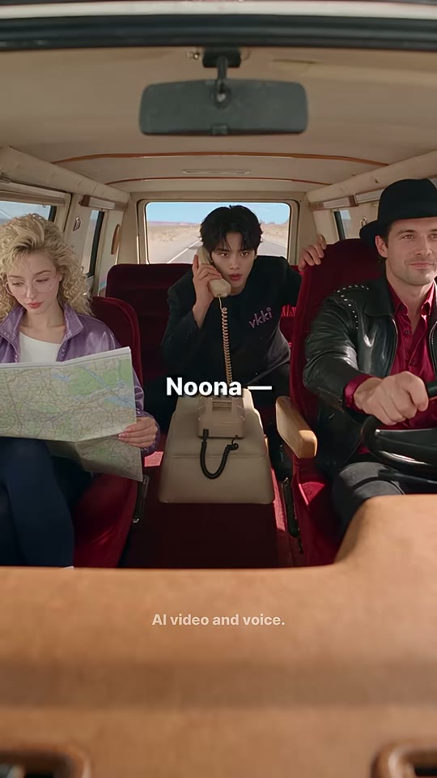
금발(내비)
막내
매니저(운전)
카폰 본체
대시보드 전경(블러)
샷WS앵글아이레벨, 대시보드 위(앞유리 자리)에서 차량 뒤쪽을 정면으로 바라보는 역방향 앵글카메라고정. 차량 진동 수준의 미세 흔들림(추정)구도3인 대칭 구도. 좌1/3 금발(조수석, 지도), 중앙 뒤쪽 막내(뒷좌석 가운데, 수화기), 우1/3 운전 매니저. 하단 35%는 초점 나간 탄색 대시보드 전경(깊이감). 뒤창 너머 사막 도로가 소실점동작금발은 고개 숙여 지도를 읽고, 매니저는 핸들을 잡고 정면 응시, 막내는 뒷좌석 가운데에서 카폰 수화기를 귀에 대고 몸을 앞으로 기울임. 큰 동작 없음대사(없음 — 1.24초부터 막내 'Noona —' 음성이 다음 컷에서 시작)화면 자막1.10초에 'Noona —'(흰색) 선등장 — 컷 0.1초 전 자막 프리롤. y≈49.6%들어오는 전환영상 시작(콜드 오픈, 로고/타이틀 없음)효과음/음악밴 엔진 험·도로 소음 앰비언스(-35dB 내외)역할설정샷: 1.2초 만에 '투어 밴 안 3인 + 카폰' 관계 제시
1순위
veo-3-13인 와이드·실내 공간감과 앰비언스 오디오 동시 생성에 강함
2순위
kling-v3다인물 배치 유지·미세 진동 표현 안정적
3순위
seedance-2-5원본 채널 사용 엔진(#seedance25) — 룩 일치
① 이미지 프롬프트 (원본 클론)photorealistic cinematic live-action film still, vertical 9:16 (608x1080), retro 1980s Americana road-trip look, bright desert daylight, gentle Kodak Portra color, fine film grain, shallow depth of field, K-drama idol-grade beauty lighting on faces. Wide shot from the dashboard looking back into the van: inside a cream-beige 1980s passenger van with tan vinyl trim, burgundy-red crushed-velvet captain seats, a beige retro car phone with coiled cord mounted on the center console, desert highway with red mesas visible through the windows. Left third: a Caucasian young woman in her early 20s, huge voluminous curly 1980s blonde perm, lavender round wire glasses, lavender satin bomber jacket over a white tee, jeans, freckle-free fair skin, red lips, sitting in the front passenger seat reading a large paper road map. Right third: a handsome Caucasian man in his late 30s, dark stubble, black felt fedora, black studded leather biker jacket over a burgundy satin shirt, a small sparkly pink-purple rhinestone 'vkki' logo (tiny star on the i) on the left chest, confident showbiz-manager grin, both hands on a black steering wheel, facing camera. Center background: a slim Korean young man in his early 20s, fluffy dark-brown wavy hair with curtain bangs, flawless pale skin, red-tinted lips, black oversized suit jacket over a black t-shirt, a small sparkly pink-purple rhinestone 'vkki' logo (tiny star on the i) on the left chest, in the middle rear seat holding the beige car-phone handset to his ear, leaning forward. Out-of-focus tan dashboard fills the bottom third as foreground. Rear window shows sunny desert highway. Symmetrical composition, 24mm lens, deep-ish focus on the three faces.
② 영상 프롬프트 (원본 클론)Static camera with subtle road vibration. The blonde studies her map, the driver steers calmly, the young man in the back presses the car-phone handset to his ear and leans in as if about to speak. Soft engine hum. No dialogue. Duration: 1.21 s.
③ 동물 버전 이미지 프롬프트photorealistic live-action film still with anthropomorphic animal actors (real fur, real eyes, Zootopia-level expressiveness but photographic), human-scale upright bodies wearing real clothes, vertical 9:16 (608x1080), retro 1980s Americana road-trip look, bright desert daylight, Kodak Portra color, shallow depth of field. Same wide shot from the dashboard looking back into the van: inside a cream-beige 1980s passenger van with tan vinyl trim, burgundy-red crushed-velvet captain seats, a beige retro car phone with coiled cord mounted on the center console, desert highway with red mesas visible through the windows. Left third: Goldie, an anthropomorphic Selkirk Rex cat (human-scale) with a huge voluminous curly cream-blonde coat like an 80s perm, lavender round wire glasses, lavender satin bomber jacket over a white tee, reading a large paper road map in the passenger seat. Right third: Manager Tiger, an anthropomorphic ginger tabby tomcat (human-scale), black felt fedora between his ears, black studded leather biker jacket over a burgundy satin shirt, a small sparkly pink-purple rhinestone 'vkki' logo (tiny star on the i) on the left chest, cocky grin, paws on a black steering wheel. Center background: Hamjji, an anthropomorphic golden Syrian hamster (human-scale, upright), fluffy golden-orange and cream fur, big glossy black eyes, chubby cheeks, black oversized suit jacket over a black t-shirt with a small sparkly pink-purple rhinestone 'vkki' logo (tiny star on the i) on the left chest, in the middle rear seat holding the beige car-phone handset to his ear. Blurred tan dashboard foreground in the bottom third. 24mm, symmetrical.
④ 동물 버전 영상 프롬프트Static camera, light van vibration. Goldie studies the map, Manager Tiger steers, Hamjji in the back clutches the car-phone handset to his cheek pouch and leans forward, whiskers twitching. Engine hum, no dialogue. Duration: 1.21 s.
네거티브subtitles, captions, text overlay, extra watermark, misspelled logo, extra fingers, fused fingers, deformed hands, warped face, face morphing between frames, duplicate characters, cartoon, anime, 3D plastic CGI skin, over-smoothed skin, horizontal frame, letterbox, low resolution, motion smear on face, modern car interior, touchscreen, smartphone || ANIMAL VERSION add: human faces, human hands, fur-less skin, cartoon mascot costume, plush toy look, tiny animal in giant set
컷 2 · 훅: 문제 제기(운전이 너무 빠름 + 영어 표현 모름)
1.21s → 4.17s (2.96s)
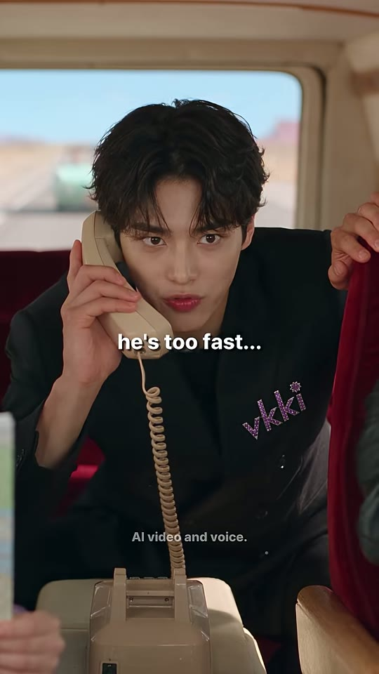
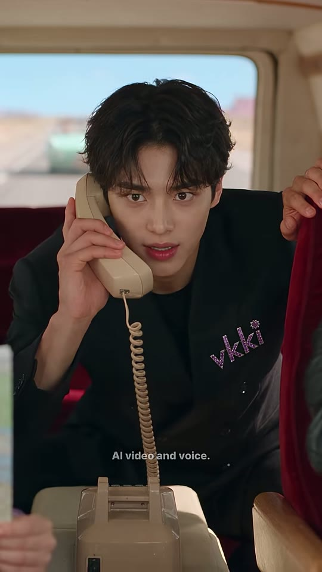
막내
얼굴
카폰 본체
시트 위 손(우측)
샷MCU앵글아이레벨, 앞좌석 사이에서 막내를 정면으로카메라고정 + 인물이 카메라 쪽으로 몸을 내밀어 자연 푸시인 효과구도막내 얼굴이 상단 1/3선(y≈27%) 좌중앙, 오른손으로 수화기를 왼쪽 귀(화면 왼쪽)에. 코일 코드가 화면 하단 카폰 본체로 수직 리드라인. 좌우에 빨간 벨벳 시트 가장자리, 뒤창 너머 사막동작눈을 크게 뜨고 다급하게 속삭이듯 말함 → 'he's too fast'에서 시선 살짝 옆(운전석) → 'What do I say?'에서 입꼬리 올리며 애원하는 미소대사막내: "Noona, he's too fast. What do I say?" (1.24~3.94s)화면 자막'Noona —'(1.10~2.30) → 'he's too fast...'(2.30~3.40) → 'what do I say?'(3.40~4.17) 전부 흰색, y≈49.6%들어오는 전환하드컷(와이드→MCU 펀치인, 같은 축). 자막이 컷보다 0.1초 먼저 등장효과음/음악엔진 앰비언스 유지, 대사 위주역할훅: 문제 제기(운전이 너무 빠름 + 영어 표현 모름)
1순위
seedance-2-5원본 엔진 — 아이돌 미형 얼굴·미세표정+네이티브 음성
2순위
minimax-h3립싱크+오디오 동시 생성, 무료(팀 기본)
3순위
kling-v3-omni대사 립싱크 정확도 보완용
① 이미지 프롬프트 (원본 클론)photorealistic cinematic live-action film still, vertical 9:16 (608x1080), retro 1980s Americana road-trip look, bright desert daylight, gentle Kodak Portra color, fine film grain, shallow depth of field, K-drama idol-grade beauty lighting on faces. Medium close-up, eye level, from between the front seats: a slim Korean young man in his early 20s, fluffy dark-brown wavy hair with curtain bangs, flawless pale skin, red-tinted lips, black oversized suit jacket over a black t-shirt, a small sparkly pink-purple rhinestone 'vkki' logo (tiny star on the i) on the left chest, leaning forward toward camera, holding a beige coiled-cord car-phone handset to his left ear with his right hand, wide urgent eyes, lips parted. Red crushed-velvet seat edges frame left and right, the beige car-phone base at the bottom center, rear van window behind him showing bright desert highway. 50mm, f/2, face sharp, background soft.
② 영상 프롬프트 (원본 클론)Locked-off camera. The young man leans closer to camera, whispering urgently into the car phone, eyes darting toward the driver, then pleading with a small smile. Lip-sync (Korean-accented young male English, hushed and urgent): "Noona, he's too fast. What do I say?" Duration: 2.96 s.
③ 동물 버전 이미지 프롬프트photorealistic live-action film still with anthropomorphic animal actors (real fur, real eyes, Zootopia-level expressiveness but photographic), human-scale upright bodies wearing real clothes, vertical 9:16 (608x1080), retro 1980s Americana road-trip look, bright desert daylight, Kodak Portra color, shallow depth of field. Medium close-up from between the front seats: Hamjji, an anthropomorphic golden Syrian hamster (human-scale, upright), fluffy golden-orange and cream fur, big glossy black eyes, chubby cheeks, black oversized suit jacket over a black t-shirt with a small sparkly pink-purple rhinestone 'vkki' logo (tiny star on the i) on the left chest, leaning toward camera, holding a beige coiled-cord car-phone handset to his left ear with one paw, wide worried black eyes, cheeks puffed. Red velvet seat edges left and right, car-phone base bottom center, desert through the rear window. 50mm, f/2.
④ 동물 버전 영상 프롬프트Locked-off camera. Hamjji leans in, whiskers trembling, whispers urgently into the car phone, glances toward the driver, then gives a pleading smile. Lip-sync (small high-pitched Korean-accented male voice): "Noona, he's too fast. What do I say?" Duration: 2.96 s.
네거티브subtitles, captions, text overlay, extra watermark, misspelled logo, extra fingers, fused fingers, deformed hands, warped face, face morphing between frames, duplicate characters, cartoon, anime, 3D plastic CGI skin, over-smoothed skin, horizontal frame, letterbox, low resolution, motion smear on face, modern car interior, touchscreen, smartphone || ANIMAL VERSION add: human faces, human hands, fur-less skin, cartoon mascot costume, plush toy look, tiny animal in giant set
컷 3 · 오답 제시(웃음의 씨앗) — 빨강 하이라이트로 '틀린 문장' 예고
4.17s → 7.0s (2.83s)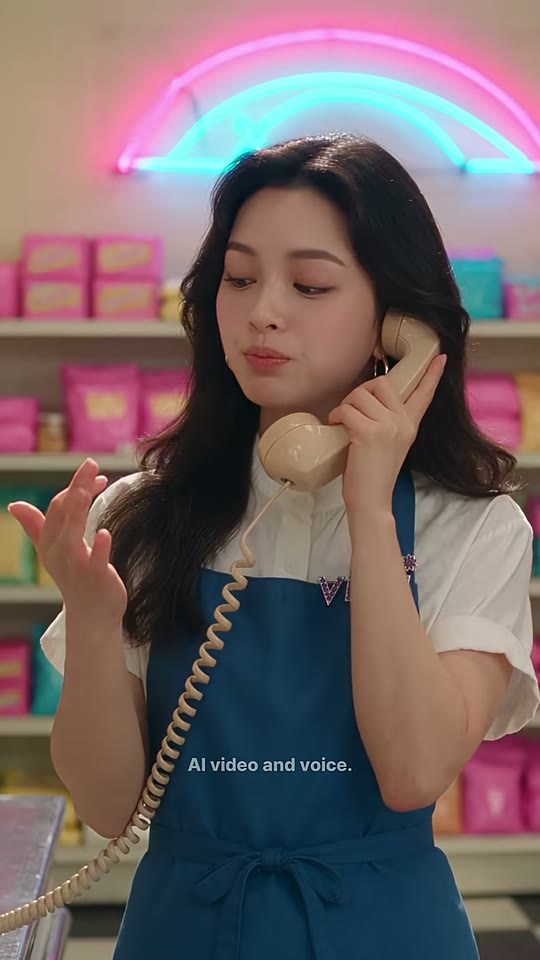


누나
얼굴
네온 간판
제스처 손
샷MS앵글아이레벨 정면카메라고정구도누나 중앙 배치(허리 위), 머리 위 네온 무지개 간판이 상단 15%를 채우는 헤드룸 프레임. 수화기는 화면 오른쪽 귀, 왼손은 화면 왼쪽에서 손바닥 펴고 '생각하는' 제스처. 배경 파스텔 스낵 선반(분홍/민트)으로 공간 전환이 즉시 읽힘동작시선 아래로 떨구고 입술 오므려 'Hmm...'(5.13~5.49 무음 비트) → 자신 있게 고개 끄덕이며 'More slow, please' → 마지막 프레임 혀를 살짝 내밀며 뿌듯한 표정대사누나: "Hmm. More slow, please." (4.96~6.56s)화면 자막'Hmm...'(4.30~5.70 흰색) → ''More slow, please''(5.70~7.00) — 'More slow'만 빨강 #F81E14(틀린 표현 표시), y≈46.8%들어오는 전환하드컷(전화 크로스컷 — 밴→가게 공간 점프)효과음/음악가게 앰비언스(약한 냉장고 험, 추정). 5.13~5.49 완전 무음 = 생각하는 비트역할오답 제시(웃음의 씨앗) — 빨강 하이라이트로 '틀린 문장' 예고
1순위
seedance-2-5원본 엔진 — 네온 림라이트·표정 연기
2순위
minimax-h3대사+오디오 동시 생성, 무료
3순위
kling-v3손 제스처·혀 내밀기 미세 동작 안정
① 이미지 프롬프트 (원본 클론)photorealistic cinematic live-action film still, vertical 9:16 (608x1080), retro 1980s Americana road-trip look, bright desert daylight, gentle Kodak Portra color, fine film grain, shallow depth of field, K-drama idol-grade beauty lighting on faces. Medium shot, eye level: a Korean woman in her mid 20s, long dark wavy hair, soft glam makeup, gold hoop earrings, white short-sleeve blouse, royal-blue work apron with a small sparkly pink-purple rhinestone 'vkki' logo (tiny star on the i) on the left chest, standing in a pastel candy and snack shop: pink and teal snack bags on white shelves, a large neon rainbow sign (pink outer tube, cyan inner tube) on the wall above. She holds a beige coiled-cord telephone handset to her right ear, left hand raised palm-up at chest height in a thinking gesture, eyes looking down, lips pursed. Neon rainbow sign glowing pink and cyan above her head, soft pastel ambient light with neon rim light on her hair. 35mm, f/2.2.
② 영상 프롬프트 (원본 클론)Static camera. She hums thoughtfully with eyes down, a one-beat pause, then nods with confident certainty and answers, finishing with a tiny satisfied tongue-out smile. Lip-sync (Korean-accented female English, relaxed and sure): "Hmm... More slow, please." Duration: 2.83 s.
③ 동물 버전 이미지 프롬프트photorealistic live-action film still with anthropomorphic animal actors (real fur, real eyes, Zootopia-level expressiveness but photographic), human-scale upright bodies wearing real clothes, vertical 9:16 (608x1080), retro 1980s Americana road-trip look, bright desert daylight, Kodak Portra color, shallow depth of field. Medium shot, eye level: Nabi, an anthropomorphic Ragdoll cat (human-scale, upright), long cream fur with dark-brown face points, sapphire-blue eyes, gold hoop earrings, white short-sleeve blouse and royal-blue work apron with a small sparkly pink-purple rhinestone 'vkki' logo (tiny star on the i) on the left chest, standing in a pastel candy and snack shop: pink and teal snack bags on white shelves, a large neon rainbow sign (pink outer tube, cyan inner tube) on the wall above. She holds a beige coiled-cord telephone handset to her right ear, one paw raised palm-up in a thinking gesture, eyes down, whiskers forward. Pink and cyan neon rainbow sign above her ears. 35mm, f/2.2.
④ 동물 버전 영상 프롬프트Static camera. Nabi hums thoughtfully, tail flicking, one-beat pause, then nods confidently and answers, ending with a tiny pink-tongue blep. Lip-sync (calm Korean-accented female voice): "Hmm... More slow, please." Duration: 2.83 s.
네거티브subtitles, captions, text overlay, extra watermark, misspelled logo, extra fingers, fused fingers, deformed hands, warped face, face morphing between frames, duplicate characters, cartoon, anime, 3D plastic CGI skin, over-smoothed skin, horizontal frame, letterbox, low resolution, motion smear on face, modern car interior, touchscreen, smartphone || ANIMAL VERSION add: human faces, human hands, fur-less skin, cartoon mascot costume, plush toy look, tiny animal in giant set
컷 4 · 오답 전달 — 틀린 문장을 그대로 복창(웃음 셋업)
7.0s → 8.21s (1.21s)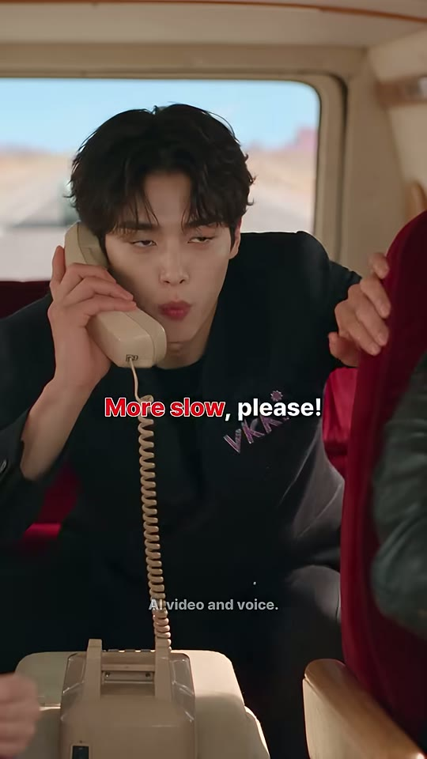
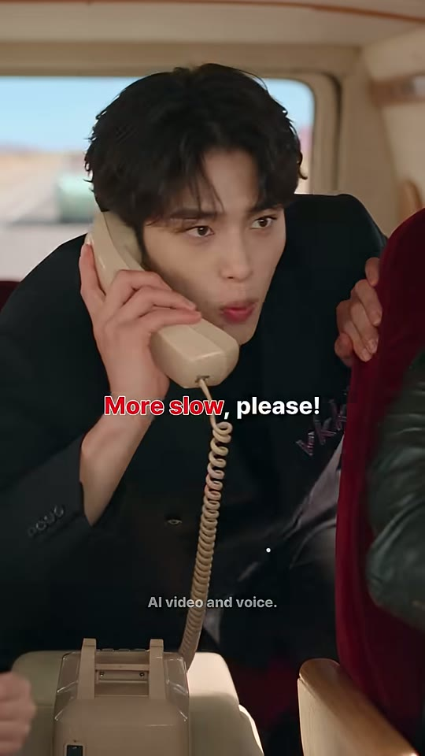
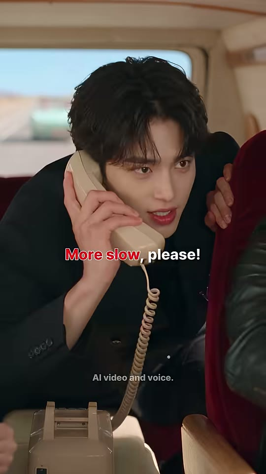
막내
얼굴(z)
카폰 본체
샷MCU앵글아이레벨, 약간 로우(추정)카메라고정. 인물이 화면 오른쪽(운전석 쪽)으로 몸을 기울여 프레이밍 이동구도샷2와 같은 셋업(매치 프레이밍) — 막내 얼굴이 a프레임 좌중앙→z프레임 우중앙으로 이동. 화면 우측 가장자리에 그를 잡는 손(누군가의 손)동작수화기를 든 채 운전석 쪽으로 몸을 쭉 내밀며 자신 있게 외침. 입 크게대사막내(운전자에게): "More slow, please!" (7.24~8.02s)화면 자막'More slow, please!' — 'More slow' 빨강, y≈53.6%들어오는 전환하드컷(가게→밴 복귀, 전화 크로스컷의 리턴)효과음/음악엔진 앰비언스역할오답 전달 — 틀린 문장을 그대로 복창(웃음 셋업)
1순위
minimax-h3짧은 외침 립싱크, 무료
2순위
seedance-2-5샷2와 얼굴 일관성 유지
3순위
hailuo-2-3과장된 몸 내밀기 코믹 동작
① 이미지 프롬프트 (원본 클론)photorealistic cinematic live-action film still, vertical 9:16 (608x1080), retro 1980s Americana road-trip look, bright desert daylight, gentle Kodak Portra color, fine film grain, shallow depth of field, K-drama idol-grade beauty lighting on faces. Medium close-up, same setup as before: a slim Korean young man in his early 20s, fluffy dark-brown wavy hair with curtain bangs, flawless pale skin, red-tinted lips, black oversized suit jacket over a black t-shirt, a small sparkly pink-purple rhinestone 'vkki' logo (tiny star on the i) on the left chest, holding the beige car-phone handset to his left ear, leaning hard toward frame right (toward the driver) between red velvet seats, mouth open mid-shout, eyebrows raised with confidence. Car-phone base at bottom, desert rear window behind. 50mm.
② 영상 프롬프트 (원본 클론)Static camera. He leans sharply toward the driver's side and calls out proudly, as if delivering the perfect answer. Lip-sync (loud, confident, Korean-accented): "More slow, please!" Duration: 1.21 s.
③ 동물 버전 이미지 프롬프트photorealistic live-action film still with anthropomorphic animal actors (real fur, real eyes, Zootopia-level expressiveness but photographic), human-scale upright bodies wearing real clothes, vertical 9:16 (608x1080), retro 1980s Americana road-trip look, bright desert daylight, Kodak Portra color, shallow depth of field. Medium close-up: Hamjji, an anthropomorphic golden Syrian hamster (human-scale, upright), fluffy golden-orange and cream fur, big glossy black eyes, chubby cheeks, black oversized suit jacket over a black t-shirt with a small sparkly pink-purple rhinestone 'vkki' logo (tiny star on the i) on the left chest, holding the car-phone handset, leaning hard toward frame right between red velvet seats, mouth open mid-shout, proud expression. 50mm.
④ 동물 버전 영상 프롬프트Static camera. Hamjji leans toward the driver, cheeks puffing, and shouts proudly. Lip-sync: "More slow, please!" Duration: 1.21 s.
네거티브subtitles, captions, text overlay, extra watermark, misspelled logo, extra fingers, fused fingers, deformed hands, warped face, face morphing between frames, duplicate characters, cartoon, anime, 3D plastic CGI skin, over-smoothed skin, horizontal frame, letterbox, low resolution, motion smear on face, modern car interior, touchscreen, smartphone || ANIMAL VERSION add: human faces, human hands, fur-less skin, cartoon mascot costume, plush toy look, tiny animal in giant set
컷 5 · 오해 발생 — 'More'만 들림 → 반전 셋업
8.21s → 10.17s (1.96s)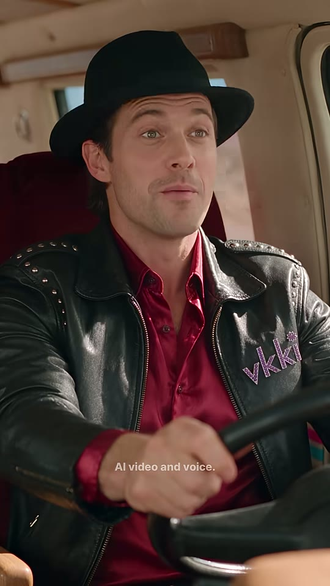


매니저
얼굴
핸들+손
샷MS앵글아이레벨, 대시보드에서 운전자 정면(대시캠 앵글)카메라고정, 미세 진동구도운전자 얼굴이 상단 1/3선 중앙(y≈20%), 페도라가 상단을 채움. 양손+핸들이 하단 1/3 가로 리드라인. 가슴 우측(화면 오른쪽)에 vkki 로고동작'More?' 눈썹 치켜들고 입술 오므림(신난 오해) → 'You got it!' 활짝 웃으며 핸들을 꽉 잡고 몸을 앞으로(가속 준비)대사매니저: "More? You got it!" (8.52~10.12s)화면 자막'More?'(8.30~9.20, 'More' 빨강 — 그가 들은 단어) → 'You got it!'(9.20~10.42 흰색, 다음 컷까지 0.25초 L컷 유지), y≈50.6%들어오는 전환하드컷(말한 사람→들은 사람, 리액션 컷)효과음/음악엔진 톤 살짝 상승(추정)역할오해 발생 — 'More'만 들림 → 반전 셋업
1순위
minimax-h3대사+표정 립싱크, 무료
2순위
seedance-2-5능글맞은 미소 미세표정
3순위
kling-v3-omni립싱크 백업
① 이미지 프롬프트 (원본 클론)photorealistic cinematic live-action film still, vertical 9:16 (608x1080), retro 1980s Americana road-trip look, bright desert daylight, gentle Kodak Portra color, fine film grain, shallow depth of field, K-drama idol-grade beauty lighting on faces. Medium shot from the dashboard: a handsome Caucasian man in his late 30s, dark stubble, black felt fedora, black studded leather biker jacket over a burgundy satin shirt, a small sparkly pink-purple rhinestone 'vkki' logo (tiny star on the i) on the left chest, confident showbiz-manager grin, both hands gripping a black steering wheel, eyebrows raised in delighted surprise, lips pursed as if saying 'More?'. Cream van interior and side window with desert light behind him, burgundy velvet seat. 35mm, f/2.8.
② 영상 프롬프트 (원본 클론)Dash-cam style, slight vibration. The driver raises his eyebrows, repeats the word with excitement, then breaks into a big showman grin and grips the wheel, leaning forward to floor it. Lip-sync (cheerful American male, playful): "More? You got it!" Duration: 1.96 s.
③ 동물 버전 이미지 프롬프트photorealistic live-action film still with anthropomorphic animal actors (real fur, real eyes, Zootopia-level expressiveness but photographic), human-scale upright bodies wearing real clothes, vertical 9:16 (608x1080), retro 1980s Americana road-trip look, bright desert daylight, Kodak Portra color, shallow depth of field. Medium shot from the dashboard: Manager Tiger, an anthropomorphic ginger tabby tomcat (human-scale), black felt fedora between his ears, black studded leather biker jacket over a burgundy satin shirt, a small sparkly pink-purple rhinestone 'vkki' logo (tiny star on the i) on the left chest, cocky grin, paws gripping a black steering wheel, ears perked, whiskers forward in delighted surprise. Cream van interior, desert light behind. 35mm.
④ 동물 버전 영상 프롬프트Dash-cam style. Manager Tiger perks his ears, repeats the word, then flashes a toothy grin and hunches forward over the wheel to accelerate. Lip-sync (cheerful American male): "More? You got it!" Duration: 1.96 s.
네거티브subtitles, captions, text overlay, extra watermark, misspelled logo, extra fingers, fused fingers, deformed hands, warped face, face morphing between frames, duplicate characters, cartoon, anime, 3D plastic CGI skin, over-smoothed skin, horizontal frame, letterbox, low resolution, motion smear on face, modern car interior, touchscreen, smartphone || ANIMAL VERSION add: human faces, human hands, fur-less skin, cartoon mascot costume, plush toy look, tiny animal in giant set
컷 6 · 물리적 결과(비주얼 펀치) — 오해의 대가
10.17s → 11.79s (1.63s)
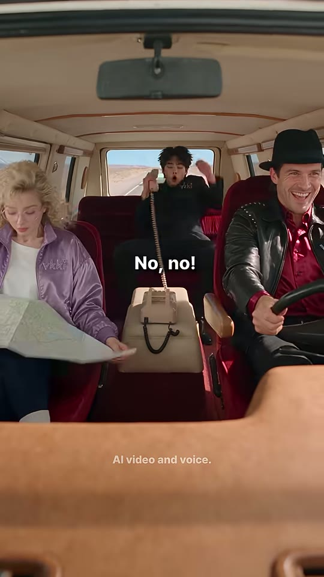
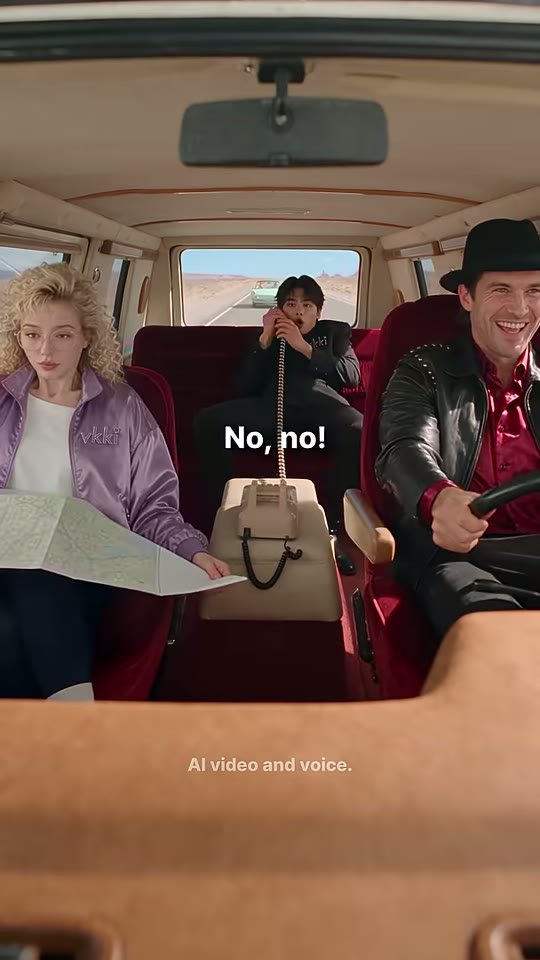
금발+날리는 지도
막내(뒤로 밀림)
매니저
대시보드 전경
샷WS앵글샷1과 동일(대시보드에서 역방향)카메라고정 + 급가속 충격 흔들림(카메라 셰이크 1~2회)구도샷1 매치 프레이밍(같은 구도 재사용으로 '변화'만 보이게). 금발의 지도가 위로 펄럭여 얼굴을 가림, 막내가 뒷좌석으로 밀려 팔을 들어 올림, 매니저는 싱글벙글동작급가속: 지도가 튀어오르고 금발이 몸을 뒤로 젖힘, 막내는 좌석에 파묻히며 두 손 들고 'No!' 비명, 운전자는 웃음대사막내: "No!" (10.46s)화면 자막'You got it!'(10.17~10.42 L컷 잔류) → 'No, no!'(10.42~, 흰색) y≈45.5%들어오는 전환하드컷 + 자막 L컷(앞 컷 대사 자막이 0.25초 넘어옴)효과음/음악엔진 굉음/가속 휘잉(RMS -15dB 피크 10.75s)역할물리적 결과(비주얼 펀치) — 오해의 대가
1순위
hailuo-2-3과장된 코믹 물리 동작(급가속·지도 날림)
2순위
veo-3-1물리+엔진 사운드 동시 생성
3순위
pixverse-v6빠른 액션 백업
① 이미지 프롬프트 (원본 클론)photorealistic cinematic live-action film still, vertical 9:16 (608x1080), retro 1980s Americana road-trip look, bright desert daylight, gentle Kodak Portra color, fine film grain, shallow depth of field, K-drama idol-grade beauty lighting on faces. Same wide shot from the dashboard looking back into the van as the opening: inside a cream-beige 1980s passenger van with tan vinyl trim, burgundy-red crushed-velvet captain seats, a beige retro car phone with coiled cord mounted on the center console, desert highway with red mesas visible through the windows. Sudden acceleration: the blonde's paper map flies up in front of her face, the young man in the back is thrown back into his seat with arms up, the driver grins widely. Motion energy, slight camera shake. 24mm.
② 영상 프롬프트 (원본 클론)The van lurches forward hard: camera jolts, the map flaps up over the blonde, the young man in the back is slammed into his seat with arms flailing and yells, the driver laughs. Engine roar. Lip-sync (young man, panicked): "No!" Duration: 1.63 s.
③ 동물 버전 이미지 프롬프트photorealistic live-action film still with anthropomorphic animal actors (real fur, real eyes, Zootopia-level expressiveness but photographic), human-scale upright bodies wearing real clothes, vertical 9:16 (608x1080), retro 1980s Americana road-trip look, bright desert daylight, Kodak Portra color, shallow depth of field. Same wide shot from the dashboard: inside a cream-beige 1980s passenger van with tan vinyl trim, burgundy-red crushed-velvet captain seats, a beige retro car phone with coiled cord mounted on the center console, desert highway with red mesas visible through the windows. Sudden acceleration: Goldie's paper map flies up, her curly coat blown back; Hamjji in the back is pressed into his seat with tiny arms up, fur rippling; Manager Tiger grins. 24mm.
④ 동물 버전 영상 프롬프트The van lurches: camera jolts, the map flaps over Goldie, Hamjji squeaks and is slammed back into the seat, cheeks wobbling, Manager Tiger laughs. Engine roar. Lip-sync (Hamjji, panicked squeak): "No!" Duration: 1.63 s.
네거티브subtitles, captions, text overlay, extra watermark, misspelled logo, extra fingers, fused fingers, deformed hands, warped face, face morphing between frames, duplicate characters, cartoon, anime, 3D plastic CGI skin, over-smoothed skin, horizontal frame, letterbox, low resolution, motion smear on face, modern car interior, touchscreen, smartphone || ANIMAL VERSION add: human faces, human hands, fur-less skin, cartoon mascot costume, plush toy look, tiny animal in giant set
컷 7 · 갈등 최고조
11.79s → 13.42s (1.63s)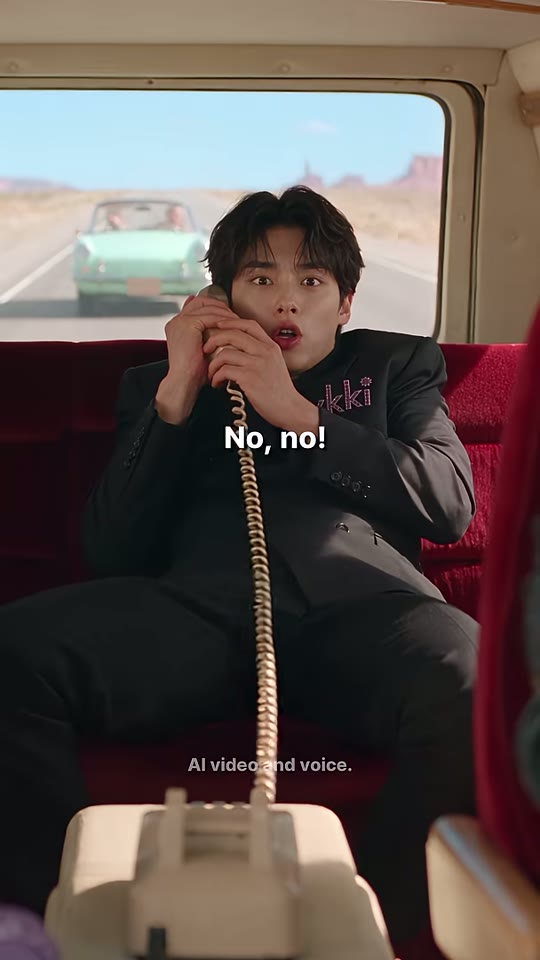
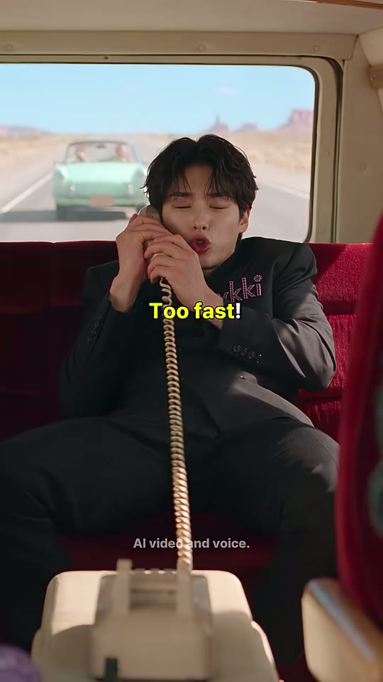

막내
얼굴
민트 컨버터블(뒤창)
카폰 본체
샷MS앵글아이레벨, 뒷좌석 정면(앞좌석 사이)카메라고정, 차량 진동구도막내가 뒷좌석 등받이에 파묻혀 중앙 상단, 두 손으로 수화기를 입에 댐. 뒤창 너머 민트색 50년대 컨버터블이 뒤처지고 메사 지형. 하단에 카폰 본체와 수직 코일 코드(리드라인)동작G포스에 눌려 좌석에 붙은 채 두 손으로 수화기 꽉 쥐고 눈 질끈 감고 외침 → 눈 뜨고 공포대사막내: "No! Too fast!" (12.38~13.20s)화면 자막'No, no!'(~12.60 흰색) → 'Too fast!'(12.60~13.42, 'Too fast' 노랑 #EEF800 — 핵심 상황어) y≈45.5%들어오는 전환하드컷(와이드→펀치인)효과음/음악엔진 고회전 지속, 바람 소리(추정)역할갈등 최고조
1순위
seedance-2-5공포 표정·G포스 몸 연기
2순위
minimax-h3외침 립싱크, 무료
3순위
grok-imagine-video-1-5과장 코믹 리액션 백업
① 이미지 프롬프트 (원본 클론)photorealistic cinematic live-action film still, vertical 9:16 (608x1080), retro 1980s Americana road-trip look, bright desert daylight, gentle Kodak Portra color, fine film grain, shallow depth of field, K-drama idol-grade beauty lighting on faces. Medium shot of the rear bench: a slim Korean young man in his early 20s, fluffy dark-brown wavy hair with curtain bangs, flawless pale skin, red-tinted lips, black oversized suit jacket over a black t-shirt, a small sparkly pink-purple rhinestone 'vkki' logo (tiny star on the i) on the left chest, pinned back into the red crushed-velvet seat by acceleration, clutching the beige car-phone handset with both hands at his mouth, eyes wide in panic, legs apart. Rear window behind him: a mint-green 1950s convertible falling behind on a desert highway, red mesas on the horizon. The beige car-phone base and taut coiled cord in the bottom foreground. 35mm.
② 영상 프롬프트 (원본 클론)Van speeding, slight vibration. He is pressed into the seat, squeezes his eyes shut and shouts into the handset, then opens them in horror. The mint convertible recedes through the rear window. Lip-sync (panicked, Korean-accented): "No! Too fast!" Duration: 1.63 s.
③ 동물 버전 이미지 프롬프트photorealistic live-action film still with anthropomorphic animal actors (real fur, real eyes, Zootopia-level expressiveness but photographic), human-scale upright bodies wearing real clothes, vertical 9:16 (608x1080), retro 1980s Americana road-trip look, bright desert daylight, Kodak Portra color, shallow depth of field. Medium shot of the rear bench: Hamjji, an anthropomorphic golden Syrian hamster (human-scale, upright), fluffy golden-orange and cream fur, big glossy black eyes, chubby cheeks, black oversized suit jacket over a black t-shirt with a small sparkly pink-purple rhinestone 'vkki' logo (tiny star on the i) on the left chest, pinned into the red velvet seat, clutching the car-phone handset with both paws at his mouth, fur blown back, eyes huge. Mint-green 1950s convertible and red mesas through the rear window, car-phone base in foreground. 35mm.
④ 동물 버전 영상 프롬프트Van speeding. Hamjji is pressed into the seat, squeezes his eyes shut and squeaks into the handset, whiskers flattened by wind. Lip-sync: "No! Too fast!" Duration: 1.63 s.
네거티브subtitles, captions, text overlay, extra watermark, misspelled logo, extra fingers, fused fingers, deformed hands, warped face, face morphing between frames, duplicate characters, cartoon, anime, 3D plastic CGI skin, over-smoothed skin, horizontal frame, letterbox, low resolution, motion smear on face, modern car interior, touchscreen, smartphone || ANIMAL VERSION add: human faces, human hands, fur-less skin, cartoon mascot costume, plush toy look, tiny animal in giant set
컷 8 · 해결자 등장(정답 예고)
13.42s → 14.67s (1.25s)
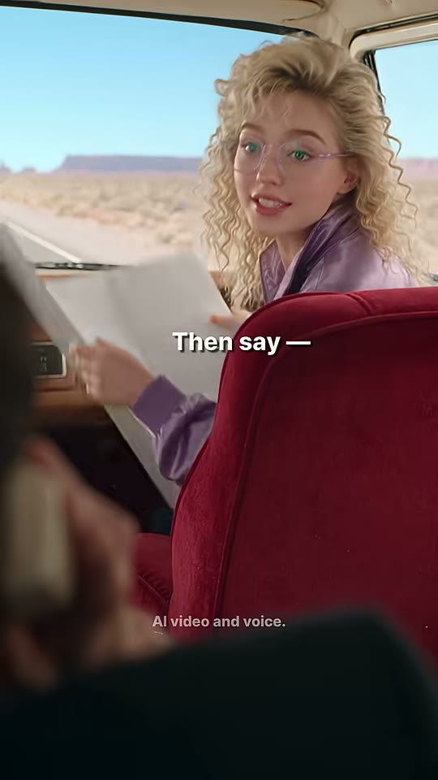
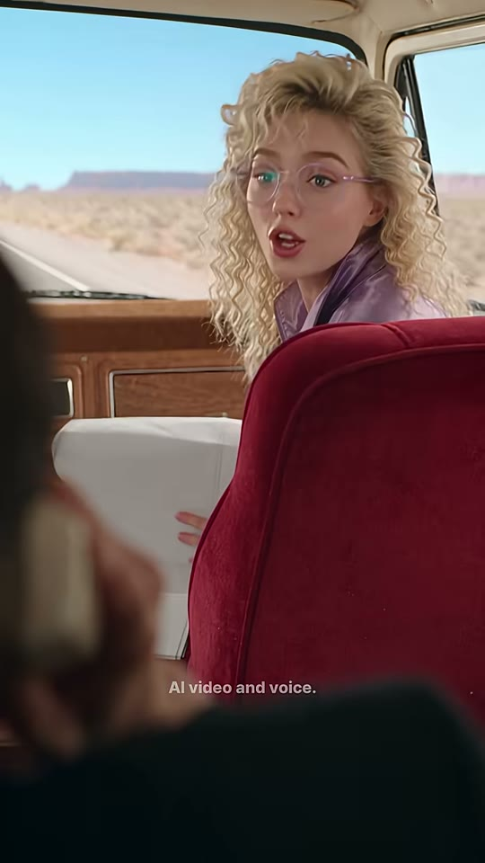
금발
조수석 등받이
막내 손/수화기(블러)
지도
샷MS (OTS)앵글뒷좌석 막내 어깨 너머, 약간 로우카메라고정 + 인물이 돌아보는 모션구도좌하단 전경에 초점 나간 막내 손+수화기(OTS 전경), 우측 2/3에 조수석 빨간 벨벳 등받이, 그 위로 금발이 몸을 돌려 뒤를 봄. 앞유리 너머 사막 메사가 수평선 1/3동작지도를 읽던 금발이 어깨 너머로 뒤를 돌아보며 도와주겠다는 듯 입을 엶대사금발: "Then say—" (13.88~14.08s)화면 자막'Then say —' 흰색 (13.70~14.67) y≈43.8%들어오는 전환하드컷(시점 전환: 뒷좌석 POV로 구원자 등장)효과음/음악엔진 앰비언스역할해결자 등장(정답 예고)
1순위
kling-v3몸 돌리기 자연스러운 모션
2순위
minimax-h3짧은 대사 립싱크, 무료
3순위
seedance-2-5캐릭터 룩 일관성
① 이미지 프롬프트 (원본 클론)photorealistic cinematic live-action film still, vertical 9:16 (608x1080), retro 1980s Americana road-trip look, bright desert daylight, gentle Kodak Portra color, fine film grain, shallow depth of field, K-drama idol-grade beauty lighting on faces. Over-the-shoulder from the back seat: blurred hand holding a beige handset in the lower-left foreground; a Caucasian young woman in her early 20s, huge voluminous curly 1980s blonde perm, lavender round wire glasses, lavender satin bomber jacket over a white tee, jeans, freckle-free fair skin, red lips, sitting in the front passenger seat, turning around over the red crushed-velvet headrest with a paper map in hand, about to speak. Windshield shows a sunlit desert highway and red mesas. 35mm, f/2.
② 영상 프롬프트 (원본 클론)Static. The blonde lowers the map and twists around in her seat to face the back, opening her mouth to help. Lip-sync (bright American female): "Then say—" Duration: 1.25 s.
③ 동물 버전 이미지 프롬프트photorealistic live-action film still with anthropomorphic animal actors (real fur, real eyes, Zootopia-level expressiveness but photographic), human-scale upright bodies wearing real clothes, vertical 9:16 (608x1080), retro 1980s Americana road-trip look, bright desert daylight, Kodak Portra color, shallow depth of field. Over-the-shoulder from the back seat: a blurred hamster paw holding a beige handset in the lower-left foreground; Goldie, an anthropomorphic Selkirk Rex cat (human-scale) with a huge voluminous curly cream-blonde coat like an 80s perm, lavender round wire glasses, lavender satin bomber jacket over a white tee, turning around over the red velvet headrest with a paper map. Desert highway through the windshield. 35mm.
④ 동물 버전 영상 프롬프트Static. Goldie lowers the map and twists around to face the back, ears swiveling, and starts to speak. Lip-sync (bright American female): "Then say—" Duration: 1.25 s.
네거티브subtitles, captions, text overlay, extra watermark, misspelled logo, extra fingers, fused fingers, deformed hands, warped face, face morphing between frames, duplicate characters, cartoon, anime, 3D plastic CGI skin, over-smoothed skin, horizontal frame, letterbox, low resolution, motion smear on face, modern car interior, touchscreen, smartphone || ANIMAL VERSION add: human faces, human hands, fur-less skin, cartoon mascot costume, plush toy look, tiny animal in giant set
컷 9 · 정답 제시(학습 포인트)
14.67s → 16.25s (1.58s)

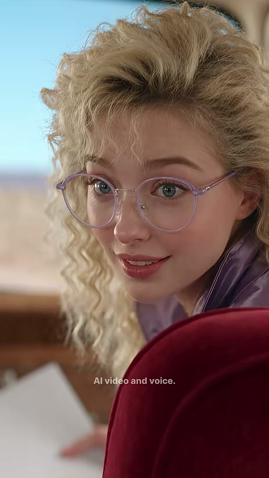
금발 얼굴+머리
등받이
지도+손
샷CU앵글아이레벨, 약간 하이(좌석 너머로 내려다봄)카메라고정구도금발 얼굴이 프레임 상단 60% 중앙, 곱슬 볼륨이 상단을 채움. 우하단 빨간 벨벳 등받이가 대각선, 좌하단 흰 지도+손. 배경 사막 창 보케동작한쪽 눈 찡긋 → 정면으로 또박또박 정답 문장을 말하며 미소대사금발: "Could you slow down, please?" (14.88~15.94s)화면 자막'Could you slow down, please?' — 'slow down' 노랑 #EEF800, y≈65.7% (얼굴 아래 벨벳 위)들어오는 전환하드컷(OTS→CU 펀치인, 같은 축)효과음/음악앰비언스 낮아짐역할정답 제시(학습 포인트)
1순위
seedance-2-5CU 미세표정(윙크·미소)
2순위
minimax-h3정확한 발음 립싱크, 무료
3순위
kling-v3-omni립싱크 백업
① 이미지 프롬프트 (원본 클론)photorealistic cinematic live-action film still, vertical 9:16 (608x1080), retro 1980s Americana road-trip look, bright desert daylight, gentle Kodak Portra color, fine film grain, shallow depth of field, K-drama idol-grade beauty lighting on faces. Close-up: a Caucasian young woman in her early 20s, huge voluminous curly 1980s blonde perm, lavender round wire glasses, lavender satin bomber jacket over a white tee, jeans, freckle-free fair skin, red lips, leaning over the red crushed-velvet seat back toward camera, one eye mid-wink, lips parted to speak, lavender glasses catching window light. Soft blurred desert window behind, white map and hand lower-left. 85mm, f/1.8.
② 영상 프롬프트 (원본 클론)Static close-up. She gives a quick wink, then says the phrase clearly and kindly like a teacher, ending with a warm smile. Lip-sync (clear American female, slow enunciation): "Could you slow down, please?" Duration: 1.58 s.
③ 동물 버전 이미지 프롬프트photorealistic live-action film still with anthropomorphic animal actors (real fur, real eyes, Zootopia-level expressiveness but photographic), human-scale upright bodies wearing real clothes, vertical 9:16 (608x1080), retro 1980s Americana road-trip look, bright desert daylight, Kodak Portra color, shallow depth of field. Close-up: Goldie, an anthropomorphic Selkirk Rex cat (human-scale) with a huge voluminous curly cream-blonde coat like an 80s perm, lavender round wire glasses, lavender satin bomber jacket over a white tee, leaning over the red velvet seat back toward camera, mid-wink, lavender glasses catching light. Blurred desert window behind. 85mm, f/1.8.
④ 동물 버전 영상 프롬프트Static close-up. Goldie winks, then says the phrase clearly with a gentle smile, whiskers relaxing. Lip-sync (clear American female): "Could you slow down, please?" Duration: 1.58 s.
네거티브subtitles, captions, text overlay, extra watermark, misspelled logo, extra fingers, fused fingers, deformed hands, warped face, face morphing between frames, duplicate characters, cartoon, anime, 3D plastic CGI skin, over-smoothed skin, horizontal frame, letterbox, low resolution, motion smear on face, modern car interior, touchscreen, smartphone || ANIMAL VERSION add: human faces, human hands, fur-less skin, cartoon mascot costume, plush toy look, tiny animal in giant set
컷 10 · 복창 1회차(학습 반복)
16.25s → 18.25s (2.0s)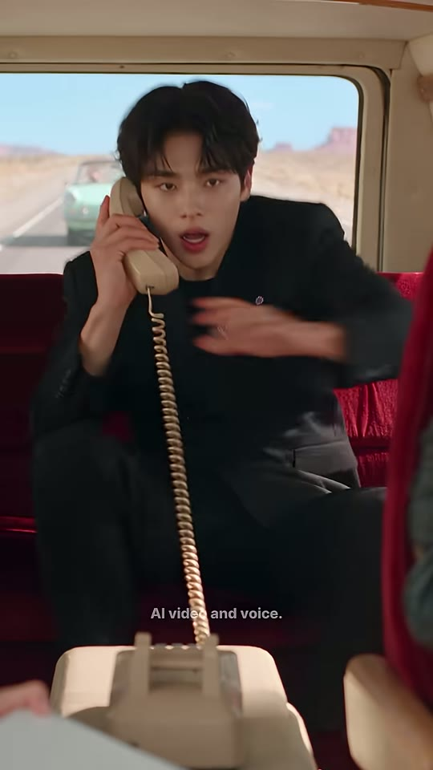


막내
얼굴
카폰 본체
샷MCU앵글아이레벨(샷2 셋업 재사용)카메라고정구도샷2/4와 동일 셋업. a프레임은 약간 더 넓게(무릎까지) 왼손을 흔드는 동작, 이후 앞으로 기울며 얼굴 중앙. 뒤창 민트 컨버터블동작손을 휘저어 운전자를 부르고 → 몸을 내밀어 정답 문장을 공손하게 복창대사막내: "Could you slow down, please?" (16.86~18.08s)화면 자막'Could you slow down, please?' — 'slow down' 노랑, y≈62.7%들어오는 전환하드컷(가르친 사람→따라 하는 사람)효과음/음악엔진 앰비언스역할복창 1회차(학습 반복)
1순위
minimax-h3대사 립싱크, 무료
2순위
seedance-2-5얼굴 일관성
3순위
kling-v3-omni백업
① 이미지 프롬프트 (원본 클론)photorealistic cinematic live-action film still, vertical 9:16 (608x1080), retro 1980s Americana road-trip look, bright desert daylight, gentle Kodak Portra color, fine film grain, shallow depth of field, K-drama idol-grade beauty lighting on faces. Medium close-up: a slim Korean young man in his early 20s, fluffy dark-brown wavy hair with curtain bangs, flawless pale skin, red-tinted lips, black oversized suit jacket over a black t-shirt, a small sparkly pink-purple rhinestone 'vkki' logo (tiny star on the i) on the left chest, holding the beige car-phone handset to his left ear, leaning forward toward the driver with a polite, careful expression, left hand raised mid-gesture. Red velvet seats, desert highway and a mint-green convertible through the rear window. 50mm.
② 영상 프롬프트 (원본 클론)Static. He waves a hand to get the driver's attention, leans in and repeats the phrase politely and carefully. Lip-sync (Korean-accented, careful): "Could you slow down, please?" Duration: 2.00 s.
③ 동물 버전 이미지 프롬프트photorealistic live-action film still with anthropomorphic animal actors (real fur, real eyes, Zootopia-level expressiveness but photographic), human-scale upright bodies wearing real clothes, vertical 9:16 (608x1080), retro 1980s Americana road-trip look, bright desert daylight, Kodak Portra color, shallow depth of field. Medium close-up: Hamjji, an anthropomorphic golden Syrian hamster (human-scale, upright), fluffy golden-orange and cream fur, big glossy black eyes, chubby cheeks, black oversized suit jacket over a black t-shirt with a small sparkly pink-purple rhinestone 'vkki' logo (tiny star on the i) on the left chest, holding the car-phone handset, leaning toward the driver with a polite careful expression, one paw raised. Red velvet seats, desert and a mint convertible behind. 50mm.
④ 동물 버전 영상 프롬프트Static. Hamjji waves a paw, leans in and repeats the phrase politely, nose twitching. Lip-sync: "Could you slow down, please?" Duration: 2.00 s.
네거티브subtitles, captions, text overlay, extra watermark, misspelled logo, extra fingers, fused fingers, deformed hands, warped face, face morphing between frames, duplicate characters, cartoon, anime, 3D plastic CGI skin, over-smoothed skin, horizontal frame, letterbox, low resolution, motion smear on face, modern car interior, touchscreen, smartphone || ANIMAL VERSION add: human faces, human hands, fur-less skin, cartoon mascot costume, plush toy look, tiny animal in giant set
컷 11 · 빈칸 퀴즈 1: 시청자가 속으로 따라 말하게 함(참여·기억)
18.25s → 19.75s (1.5s)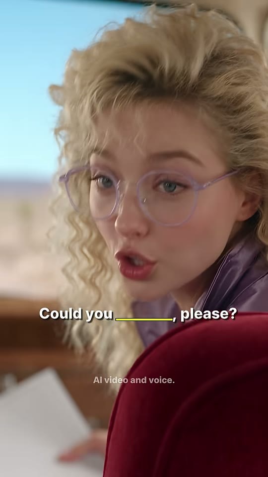


금발 얼굴+머리
등받이
샷CU앵글샷9와 동일카메라고정구도샷9 셋업 재사용(같은 생성 클립의 다른 테이크/구간 추정)동작정답 문장을 한 번 더 또박또박, 끝에 미소대사금발: "Could you slow down, please?" (18.40~19.50s)화면 자막빈칸 퀴즈 'Could you ______, please?' — 빈칸은 노랑 밑줄(7자 언더스코어), y≈65.6%들어오는 전환하드컷효과음/음악앰비언스역할빈칸 퀴즈 1: 시청자가 속으로 따라 말하게 함(참여·기억)
1순위
seedance-2-5샷9와 동일 인물 연속성
2순위
minimax-h3립싱크, 무료
3순위
gemini-omni-1-1-flash저비용 립싱크 백업
① 이미지 프롬프트 (원본 클론)photorealistic cinematic live-action film still, vertical 9:16 (608x1080), retro 1980s Americana road-trip look, bright desert daylight, gentle Kodak Portra color, fine film grain, shallow depth of field, K-drama idol-grade beauty lighting on faces. Close-up identical to the previous blonde close-up: a Caucasian young woman in her early 20s, huge voluminous curly 1980s blonde perm, lavender round wire glasses, lavender satin bomber jacket over a white tee, jeans, freckle-free fair skin, red lips, leaning over the red velvet seat, eyes open looking at camera, mouth mid-word. 85mm, f/1.8.
② 영상 프롬프트 (원본 클론)Static close-up. She repeats the phrase slowly, encouraging, ending with a small nod and smile. Lip-sync: "Could you slow down, please?" Duration: 1.50 s.
③ 동물 버전 이미지 프롬프트photorealistic live-action film still with anthropomorphic animal actors (real fur, real eyes, Zootopia-level expressiveness but photographic), human-scale upright bodies wearing real clothes, vertical 9:16 (608x1080), retro 1980s Americana road-trip look, bright desert daylight, Kodak Portra color, shallow depth of field. Close-up identical to Goldie's previous close-up: Goldie, an anthropomorphic Selkirk Rex cat (human-scale) with a huge voluminous curly cream-blonde coat like an 80s perm, lavender round wire glasses, lavender satin bomber jacket over a white tee, eyes on camera, mouth mid-word. 85mm.
④ 동물 버전 영상 프롬프트Static close-up. Goldie repeats the phrase slowly and encouragingly, small nod. Lip-sync: "Could you slow down, please?" Duration: 1.50 s.
네거티브subtitles, captions, text overlay, extra watermark, misspelled logo, extra fingers, fused fingers, deformed hands, warped face, face morphing between frames, duplicate characters, cartoon, anime, 3D plastic CGI skin, over-smoothed skin, horizontal frame, letterbox, low resolution, motion smear on face, modern car interior, touchscreen, smartphone || ANIMAL VERSION add: human faces, human hands, fur-less skin, cartoon mascot costume, plush toy look, tiny animal in giant set
컷 12 · 빈칸 퀴즈 2(반복 3회 = 암기 구조)
19.75s → 21.67s (1.92s)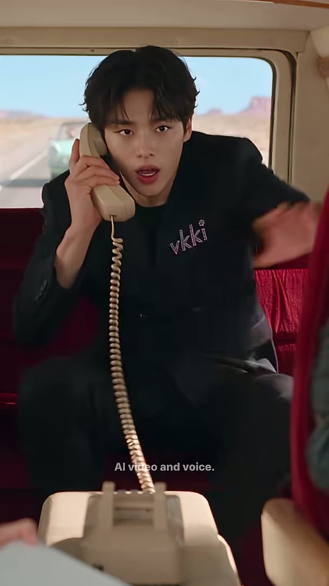
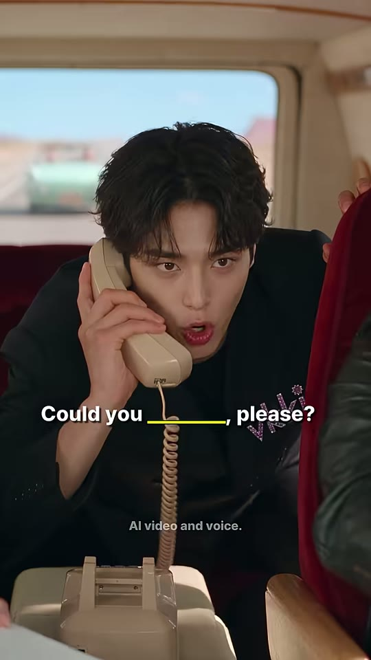

막내
얼굴
샷MCU앵글샷10과 동일카메라고정구도샷10 셋업 재사용, a프레임은 손 제스처로 약간 와이드동작다시 한 번 운전자 쪽으로 몸을 내밀며 문장 복창, 이번엔 조금 더 자신 있게대사막내: "Could you slow down, please?" (20.32~21.54s)화면 자막빈칸 퀴즈 'Could you ______, please?' 노랑 밑줄, y≈62.7%들어오는 전환하드컷효과음/음악앰비언스역할빈칸 퀴즈 2(반복 3회 = 암기 구조)
1순위
minimax-h3립싱크, 무료
2순위
seedance-2-5연속성
3순위
kling-v3-omni백업
① 이미지 프롬프트 (원본 클론)photorealistic cinematic live-action film still, vertical 9:16 (608x1080), retro 1980s Americana road-trip look, bright desert daylight, gentle Kodak Portra color, fine film grain, shallow depth of field, K-drama idol-grade beauty lighting on faces. Medium close-up identical to the previous setup: a slim Korean young man in his early 20s, fluffy dark-brown wavy hair with curtain bangs, flawless pale skin, red-tinted lips, black oversized suit jacket over a black t-shirt, a small sparkly pink-purple rhinestone 'vkki' logo (tiny star on the i) on the left chest, handset to ear, leaning toward the driver, more confident expression. 50mm.
② 영상 프롬프트 (원본 클론)Static. He leans in and repeats the phrase once more, now confident and polite. Lip-sync: "Could you slow down, please?" Duration: 1.92 s.
③ 동물 버전 이미지 프롬프트photorealistic live-action film still with anthropomorphic animal actors (real fur, real eyes, Zootopia-level expressiveness but photographic), human-scale upright bodies wearing real clothes, vertical 9:16 (608x1080), retro 1980s Americana road-trip look, bright desert daylight, Kodak Portra color, shallow depth of field. Medium close-up identical to the previous Hamjji setup: Hamjji, an anthropomorphic golden Syrian hamster (human-scale, upright), fluffy golden-orange and cream fur, big glossy black eyes, chubby cheeks, black oversized suit jacket over a black t-shirt with a small sparkly pink-purple rhinestone 'vkki' logo (tiny star on the i) on the left chest, handset to ear, leaning toward the driver, confident. 50mm.
④ 동물 버전 영상 프롬프트Static. Hamjji leans in and repeats the phrase confidently. Lip-sync: "Could you slow down, please?" Duration: 1.92 s.
네거티브subtitles, captions, text overlay, extra watermark, misspelled logo, extra fingers, fused fingers, deformed hands, warped face, face morphing between frames, duplicate characters, cartoon, anime, 3D plastic CGI skin, over-smoothed skin, horizontal frame, letterbox, low resolution, motion smear on face, modern car interior, touchscreen, smartphone || ANIMAL VERSION add: human faces, human hands, fur-less skin, cartoon mascot costume, plush toy look, tiny animal in giant set
컷 13 · 해결(정답 문장이 통함)
21.67s → 22.96s (1.29s)


매니저
얼굴
샷MS앵글샷5와 동일(대시캠)카메라고정구도샷5 매치 프레이밍 — 같은 구도에서 표정만 '신남→여유'로 대비동작눈 감고 부드럽게 미소지으며 끄덕 → 눈 뜨고 여유로운 미소, 핸들 느슨하게대사매니저: "Sure thing." (22.06~22.58s)화면 자막'Sure thing' 흰색(21.95~22.96) y≈52.7%들어오는 전환하드컷효과음/음악엔진 톤 하강(감속, 추정)역할해결(정답 문장이 통함)
1순위
minimax-h3짧은 대사 립싱크, 무료
2순위
seedance-2-5여유 미소 미세표정
3순위
kling-v3-omni백업
① 이미지 프롬프트 (원본 클론)photorealistic cinematic live-action film still, vertical 9:16 (608x1080), retro 1980s Americana road-trip look, bright desert daylight, gentle Kodak Portra color, fine film grain, shallow depth of field, K-drama idol-grade beauty lighting on faces. Medium shot from the dashboard, same as his earlier shot: a handsome Caucasian man in his late 30s, dark stubble, black felt fedora, black studded leather biker jacket over a burgundy satin shirt, a small sparkly pink-purple rhinestone 'vkki' logo (tiny star on the i) on the left chest, confident showbiz-manager grin, eyes closed with a relaxed easy smile, hands loosely on the steering wheel. 35mm.
② 영상 프롬프트 (원본 클론)Dash-cam style. He nods with eyes closed and a relaxed smile, easing off the gas, then opens his eyes calmly. Lip-sync (smooth American male): "Sure thing." Duration: 1.29 s.
③ 동물 버전 이미지 프롬프트photorealistic live-action film still with anthropomorphic animal actors (real fur, real eyes, Zootopia-level expressiveness but photographic), human-scale upright bodies wearing real clothes, vertical 9:16 (608x1080), retro 1980s Americana road-trip look, bright desert daylight, Kodak Portra color, shallow depth of field. Medium shot from the dashboard: Manager Tiger, an anthropomorphic ginger tabby tomcat (human-scale), black felt fedora between his ears, black studded leather biker jacket over a burgundy satin shirt, a small sparkly pink-purple rhinestone 'vkki' logo (tiny star on the i) on the left chest, cocky grin, eyes closed in a content slow-blink smile, paws loose on the wheel. 35mm.
④ 동물 버전 영상 프롬프트Dash-cam style. Manager Tiger does a slow cat blink and nods, easing off the gas. Lip-sync (smooth American male): "Sure thing." Duration: 1.29 s.
네거티브subtitles, captions, text overlay, extra watermark, misspelled logo, extra fingers, fused fingers, deformed hands, warped face, face morphing between frames, duplicate characters, cartoon, anime, 3D plastic CGI skin, over-smoothed skin, horizontal frame, letterbox, low resolution, motion smear on face, modern car interior, touchscreen, smartphone || ANIMAL VERSION add: human faces, human hands, fur-less skin, cartoon mascot costume, plush toy look, tiny animal in giant set
컷 14 · 펀치라인(체면치레 데드팬) + 루프: 마지막 무표정이 첫 컷 다급함과 대비돼 재시청 유도
22.96s → 24.52s (1.56s)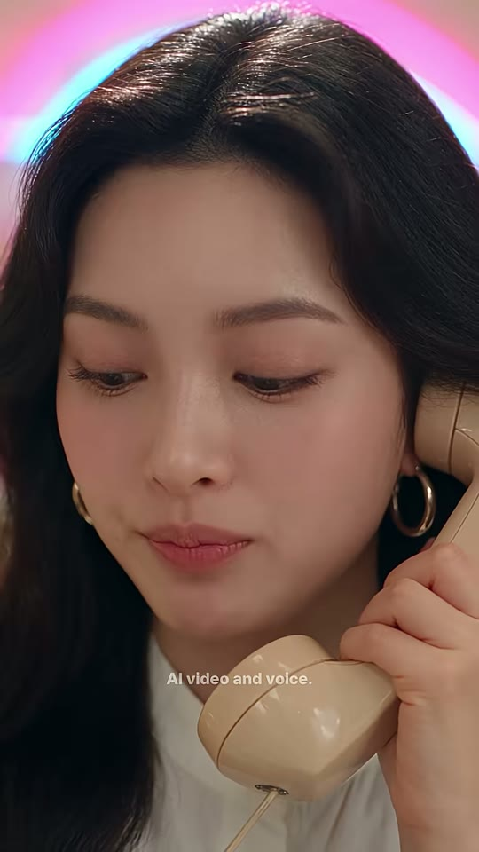
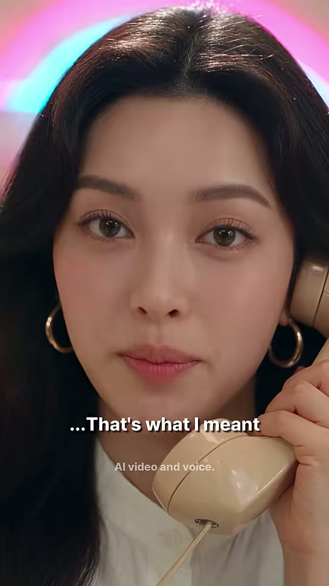
누나 얼굴
수화기
샷CU (타이트)앵글아이레벨 정면, 카메라 응시카메라고정(아주 미세한 푸시인, 추정)구도누나 얼굴이 프레임 가득(이마 상단 잘림), 수화기는 오른쪽 하단. 배경은 분홍·시안 네온 보케만. 자막은 턱 아래 y≈72%동작시선 아래로 떨궈 머쓱 → 천천히 카메라를 정면으로 보며 무표정하게 '원래 그 뜻이었어' (체면치레 데드팬)대사누나: "That's what I meant." (23.28~24.04s)화면 자막'...That's what I meant' 흰색(23.20~24.52) y≈72.3%들어오는 전환하드컷(밴→가게, 전화 크로스컷 마지막 리턴). 23.04~23.41 무음 = 펀치라인 직전 정적효과음/음악0.37초 정적 후 대사, 끝은 페이드 없이 하드 엔드역할펀치라인(체면치레 데드팬) + 루프: 마지막 무표정이 첫 컷 다급함과 대비돼 재시청 유도
1순위
seedance-2-5데드팬 미세표정·눈 들어올림 CU 최강
2순위
kling-v3CU 얼굴 안정
3순위
minimax-h3립싱크, 무료
① 이미지 프롬프트 (원본 클론)photorealistic cinematic live-action film still, vertical 9:16 (608x1080), retro 1980s Americana road-trip look, bright desert daylight, gentle Kodak Portra color, fine film grain, shallow depth of field, K-drama idol-grade beauty lighting on faces. Tight close-up: a Korean woman in her mid 20s, long dark wavy hair, soft glam makeup, gold hoop earrings, white short-sleeve blouse, royal-blue work apron with a small sparkly pink-purple rhinestone 'vkki' logo (tiny star on the i) on the left chest, face filling the frame, beige telephone handset at her right ear, gold hoop earrings, eyes lowered sheepishly, pink and cyan neon glow blurred behind her. 85mm, f/1.8, soft beauty light.
② 영상 프롬프트 (원본 클론)Static tight close-up. After a beat of silence she lifts her eyes to the lens and says flatly, pretending she meant it all along. Deadpan. Lip-sync (Korean-accented female, dry): "...That's what I meant." Duration: 1.56 s.
③ 동물 버전 이미지 프롬프트photorealistic live-action film still with anthropomorphic animal actors (real fur, real eyes, Zootopia-level expressiveness but photographic), human-scale upright bodies wearing real clothes, vertical 9:16 (608x1080), retro 1980s Americana road-trip look, bright desert daylight, Kodak Portra color, shallow depth of field. Tight close-up: Nabi, an anthropomorphic Ragdoll cat (human-scale, upright), long cream fur with dark-brown face points, sapphire-blue eyes, gold hoop earrings, white short-sleeve blouse and royal-blue work apron with a small sparkly pink-purple rhinestone 'vkki' logo (tiny star on the i) on the left chest, face filling the frame, beige handset at her ear, gold hoops, eyes lowered sheepishly, pink and cyan neon bokeh behind. 85mm.
④ 동물 버전 영상 프롬프트Static tight close-up. After a beat, Nabi raises her eyes to the lens with a flat unimpressed cat face, ears slightly back. Lip-sync (dry deadpan): "...That's what I meant." Duration: 1.56 s.
네거티브subtitles, captions, text overlay, extra watermark, misspelled logo, extra fingers, fused fingers, deformed hands, warped face, face morphing between frames, duplicate characters, cartoon, anime, 3D plastic CGI skin, over-smoothed skin, horizontal frame, letterbox, low resolution, motion smear on face, modern car interior, touchscreen, smartphone || ANIMAL VERSION add: human faces, human hands, fur-less skin, cartoon mascot costume, plush toy look, tiny animal in giant set
✂️ 편집 키트
타임라인0.00 밴 와이드(설정) → 1.21 막내 MCU 질문 → 4.17 누나 가게 MS 오답(빨강) → 7.00 막내 복창 → 8.21 매니저 'More? You got it!' → 10.17 와이드 급가속(자막 L컷 0.25s) → 11.79 막내 'No, no! Too fast!'(노랑) → 13.42 금발 OTS 'Then say —' → 14.67 금발 CU 정답(노랑 slow down) → 16.25 막내 복창 → 18.25 금발 빈칸 → 19.75 막내 빈칸 → 21.67 매니저 'Sure thing' → 22.96 누나 CU 데드팬 → 24.52 하드 엔드. 전환 100% 하드컷, xfade/페이드 없음
FFmpeg 명령# === vk_FHp3FxsEkbY 클론 편집 (Git Bash 기준, 작업폴더에 raw/ s01~s14.mp4 생성본, clips/ 빈 폴더) ===
# 0) 컷별 정규화: 608x1080·24fps·정확한 프레임 수(총 588f = 24.50s)로 트림, 오디오 44.1k 스테레오
mkdir -p clips
ffmpeg -y -i raw/s01.mp4 -frames:v 29 -vf "scale=608:1080:force_original_aspect_ratio=increase,crop=608:1080,fps=24,setsar=1,format=yuv420p" -af "aresample=44100,apad" -t 1.2083 -c:v libx264 -crf 16 -preset slow -c:a aac -b:a 192k -ar 44100 -ac 2 clips/s01.mp4
ffmpeg -y -i raw/s02.mp4 -frames:v 71 -vf "scale=608:1080:force_original_aspect_ratio=increase,crop=608:1080,fps=24,setsar=1,format=yuv420p" -af "aresample=44100,apad" -t 2.9583 -c:v libx264 -crf 16 -preset slow -c:a aac -b:a 192k -ar 44100 -ac 2 clips/s02.mp4
ffmpeg -y -i raw/s03.mp4 -frames:v 68 -vf "scale=608:1080:force_original_aspect_ratio=increase,crop=608:1080,fps=24,setsar=1,format=yuv420p" -af "aresample=44100,apad" -t 2.8333 -c:v libx264 -crf 16 -preset slow -c:a aac -b:a 192k -ar 44100 -ac 2 clips/s03.mp4
ffmpeg -y -i raw/s04.mp4 -frames:v 29 -vf "scale=608:1080:force_original_aspect_ratio=increase,crop=608:1080,fps=24,setsar=1,format=yuv420p" -af "aresample=44100,apad" -t 1.2083 -c:v libx264 -crf 16 -preset slow -c:a aac -b:a 192k -ar 44100 -ac 2 clips/s04.mp4
ffmpeg -y -i raw/s05.mp4 -frames:v 47 -vf "scale=608:1080:force_original_aspect_ratio=increase,crop=608:1080,fps=24,setsar=1,format=yuv420p" -af "aresample=44100,apad" -t 1.9583 -c:v libx264 -crf 16 -preset slow -c:a aac -b:a 192k -ar 44100 -ac 2 clips/s05.mp4
ffmpeg -y -i raw/s06.mp4 -frames:v 39 -vf "scale=608:1080:force_original_aspect_ratio=increase,crop=608:1080,fps=24,setsar=1,format=yuv420p" -af "aresample=44100,apad" -t 1.6250 -c:v libx264 -crf 16 -preset slow -c:a aac -b:a 192k -ar 44100 -ac 2 clips/s06.mp4
ffmpeg -y -i raw/s07.mp4 -frames:v 39 -vf "scale=608:1080:force_original_aspect_ratio=increase,crop=608:1080,fps=24,setsar=1,format=yuv420p" -af "aresample=44100,apad" -t 1.6250 -c:v libx264 -crf 16 -preset slow -c:a aac -b:a 192k -ar 44100 -ac 2 clips/s07.mp4
ffmpeg -y -i raw/s08.mp4 -frames:v 30 -vf "scale=608:1080:force_original_aspect_ratio=increase,crop=608:1080,fps=24,setsar=1,format=yuv420p" -af "aresample=44100,apad" -t 1.2500 -c:v libx264 -crf 16 -preset slow -c:a aac -b:a 192k -ar 44100 -ac 2 clips/s08.mp4
ffmpeg -y -i raw/s09.mp4 -frames:v 38 -vf "scale=608:1080:force_original_aspect_ratio=increase,crop=608:1080,fps=24,setsar=1,format=yuv420p" -af "aresample=44100,apad" -t 1.5833 -c:v libx264 -crf 16 -preset slow -c:a aac -b:a 192k -ar 44100 -ac 2 clips/s09.mp4
ffmpeg -y -i raw/s10.mp4 -frames:v 48 -vf "scale=608:1080:force_original_aspect_ratio=increase,crop=608:1080,fps=24,setsar=1,format=yuv420p" -af "aresample=44100,apad" -t 2.0000 -c:v libx264 -crf 16 -preset slow -c:a aac -b:a 192k -ar 44100 -ac 2 clips/s10.mp4
ffmpeg -y -i raw/s11.mp4 -frames:v 36 -vf "scale=608:1080:force_original_aspect_ratio=increase,crop=608:1080,fps=24,setsar=1,format=yuv420p" -af "aresample=44100,apad" -t 1.5000 -c:v libx264 -crf 16 -preset slow -c:a aac -b:a 192k -ar 44100 -ac 2 clips/s11.mp4
ffmpeg -y -i raw/s12.mp4 -frames:v 46 -vf "scale=608:1080:force_original_aspect_ratio=increase,crop=608:1080,fps=24,setsar=1,format=yuv420p" -af "aresample=44100,apad" -t 1.9167 -c:v libx264 -crf 16 -preset slow -c:a aac -b:a 192k -ar 44100 -ac 2 clips/s12.mp4
ffmpeg -y -i raw/s13.mp4 -frames:v 31 -vf "scale=608:1080:force_original_aspect_ratio=increase,crop=608:1080,fps=24,setsar=1,format=yuv420p" -af "aresample=44100,apad" -t 1.2917 -c:v libx264 -crf 16 -preset slow -c:a aac -b:a 192k -ar 44100 -ac 2 clips/s13.mp4
ffmpeg -y -i raw/s14.mp4 -frames:v 37 -vf "scale=608:1080:force_original_aspect_ratio=increase,crop=608:1080,fps=24,setsar=1,format=yuv420p" -af "aresample=44100,apad" -t 1.5417 -c:v libx264 -crf 16 -preset slow -c:a aac -b:a 192k -ar 44100 -ac 2 clips/s14.mp4
# 1) concat (전환은 전부 하드컷 — xfade 없음)
for i in $(seq -w 1 14); do echo "file 'clips/s$i.mp4'"; done > list.txt
ffmpeg -y -f concat -safe 0 -i list.txt -c copy joined.mp4
# 2) (옵션B) 대사를 별도 TTS/보이스 파일로 쓸 때: 원본 발화 시각(ms)에 정확히 배치 후 앰비언스(클립 오디오)와 믹스
ffmpeg -y -i joined.mp4 -i vo/01_boy.wav -i vo/02_noona.wav -i vo/03_boy.wav -i vo/04_driver.wav -i vo/05_boy.wav -i vo/06_blonde.wav -i vo/07_boy.wav -i vo/08_blonde.wav -i vo/09_boy.wav -i vo/10_driver.wav -i vo/11_noona.wav -filter_complex "[1:a]adelay=1240|1240[a1];[2:a]adelay=4960|4960[a2];[3:a]adelay=7240|7240[a3];[4:a]adelay=8520|8520[a4];[5:a]adelay=10460|10460[a5];[6:a]adelay=13880|13880[a6];[7:a]adelay=16860|16860[a7];[8:a]adelay=18400|18400[a8];[9:a]adelay=20320|20320[a9];[10:a]adelay=22060|22060[a10];[11:a]adelay=23280|23280[a11];[a1][a2][a3][a4][a5][a6][a7][a8][a9][a10][a11]amix=inputs=11:normalize=0[vo];[0:a]volume=0.35[amb];[amb][vo]amix=inputs=2:duration=first:normalize=0[mix]" -map 0:v -map "[mix]" -c:v copy -c:a aac -b:a 192k joined_vo.mp4
# 3) (옵션) BGM 덕킹 — 원본엔 뚜렷한 BGM 없음(추정). 넣을 경우 대사 구간에서 -12dB 자동 감쇠
ffmpeg -y -i joined.mp4 -stream_loop -1 -i bgm.mp3 -filter_complex "[0:a]asplit=2[dry][sc];[1:a]volume=0.18,atrim=0:24.52[bg];[bg][sc]sidechaincompress=threshold=0.02:ratio=10:attack=15:release=350[duck];[dry][duck]amix=inputs=2:duration=first:normalize=0[a]" -map 0:v -map "[a]" -c:v copy -c:a aac -b:a 192k joined_bgm.mp4
# 4) 자막+워터마크 burn-in (vk_FHp3FxsEkbY.ass = edit.ass_subtitle 내용 그대로 저장, Inter 설치 필요(fonts.google.com/specimen/Inter) / 없으면 Fontname만 교체하고 예시문장 폭 498px 되게 크기 조정)
ffmpeg -y -i joined.mp4 -vf "ass=vk_FHp3FxsEkbY.ass" -c:v libx264 -crf 17 -preset slow -pix_fmt yuv420p -c:a copy subbed.mp4
# 5) 라우드니스: 원본은 -22.7 LUFS(작게 마스터링). 클론은 원본값, 업로드 최적은 -14 LUFS
ffmpeg -y -i subbed.mp4 -af "loudnorm=I=-14:TP=-1.5:LRA=11" -c:v copy -c:a aac -b:a 192k -ar 44100 final_vk_FHp3FxsEkbY.mp4
# 원본 1:1 라우드니스 재현용: loudnorm=I=-22.7:TP=-2:LRA=6.5
# 6) 엔딩: 페이드아웃 없음 — 24.52s 누나 CU에서 하드 엔드(루프 재생 시 첫 와이드로 바로 이어짐)
ASS 자막 스타일[Script Info]
ScriptType: v4.00+
PlayResX: 608
PlayResY: 1080
WrapStyle: 2
ScaledBorderAndShadow: yes
[V4+ Styles]
Format: Name, Fontname, Fontsize, PrimaryColour, SecondaryColour, OutlineColour, BackColour, Bold, Italic, Underline, StrikeOut, ScaleX, ScaleY, Spacing, Angle, BorderStyle, Outline, Shadow, Alignment, MarginL, MarginR, MarginV, Encoding
Style: Cap,Inter,36,&H00FFFFFF,&H00FFFFFF,&H00000000,&H8C000000,-1,0,0,0,100,100,0,0,1,0.6,2,5,20,20,0,1
Style: WM,Inter,22,&H50FFFFFF,&H50FFFFFF,&H00000000,&HB4000000,0,0,0,0,100,100,0.2,0,1,0,1,5,0,0,0,1
[Events]
Format: Layer, Start, End, Style, Name, MarginL, MarginR, MarginV, Effect, Text
Dialogue: 1,0:00:01.10,0:00:02.30,Cap,,0,0,0,,{\pos(304,536)}Noona —
Dialogue: 1,0:00:02.30,0:00:03.40,Cap,,0,0,0,,{\pos(304,536)}he's too fast...
Dialogue: 1,0:00:03.40,0:00:04.17,Cap,,0,0,0,,{\pos(304,536)}what do I say?
Dialogue: 1,0:00:04.30,0:00:05.70,Cap,,0,0,0,,{\pos(304,505)}Hmm...
Dialogue: 1,0:00:05.70,0:00:07.00,Cap,,0,0,0,,{\pos(304,505)}'{\c&H141EF8&}More slow{\c&HFFFFFF&}, please'
Dialogue: 1,0:00:07.00,0:00:08.21,Cap,,0,0,0,,{\pos(304,579)}{\c&H141EF8&}More slow{\c&HFFFFFF&}, please!
Dialogue: 1,0:00:08.30,0:00:09.20,Cap,,0,0,0,,{\pos(304,547)}{\c&H141EF8&}More{\c&HFFFFFF&}?
Dialogue: 1,0:00:09.20,0:00:10.42,Cap,,0,0,0,,{\pos(304,547)}You got it!
Dialogue: 1,0:00:10.42,0:00:12.60,Cap,,0,0,0,,{\pos(304,491)}No, no!
Dialogue: 1,0:00:12.60,0:00:13.42,Cap,,0,0,0,,{\pos(304,491)}{\c&H00F8EE&}Too fast{\c&HFFFFFF&}!
Dialogue: 1,0:00:13.70,0:00:14.67,Cap,,0,0,0,,{\pos(304,473)}Then say —
Dialogue: 1,0:00:14.85,0:00:16.25,Cap,,0,0,0,,{\pos(304,710)}Could you {\c&H00F8EE&}slow down{\c&HFFFFFF&}, please?
Dialogue: 1,0:00:16.25,0:00:18.25,Cap,,0,0,0,,{\pos(304,677)}Could you {\c&H00F8EE&}slow down{\c&HFFFFFF&}, please?
Dialogue: 1,0:00:18.25,0:00:19.75,Cap,,0,0,0,,{\pos(304,709)}Could you {\c&H00F8EE&}_______{\c&HFFFFFF&}, please?
Dialogue: 1,0:00:19.75,0:00:21.67,Cap,,0,0,0,,{\pos(304,677)}Could you {\c&H00F8EE&}_______{\c&HFFFFFF&}, please?
Dialogue: 1,0:00:21.95,0:00:22.96,Cap,,0,0,0,,{\pos(304,569)}Sure thing
Dialogue: 1,0:00:23.20,0:00:24.52,Cap,,0,0,0,,{\pos(304,781)}...That's what I meant
Dialogue: 0,0:00:00.00,0:00:24.52,WM,,0,0,0,,{\pos(304,859)}AI video and voice.
HyperFrames 편집 프롬프트 (Claude에 그대로 붙여넣기)HyperFrames로 9:16(608x1080, 24fps) 컴포지션을 만들어줘. 총 길이 24520ms. 트랙1(비디오): clips/s01~s14.mp4를 하드컷으로 순서대로 배치 — s01 0~1208ms, s02 1208~4167, s03 4167~7000, s04 7000~8208, s05 8208~10167, s06 10167~11792, s07 11792~13417, s08 13417~14667, s09 14667~16250, s10 16250~18250, s11 18250~19750, s12 19750~21667, s13 21667~22958, s14 22958~24520. 전환 효과·페이드 금지(엔딩도 하드 엔드). 트랙2(자막): Inter Bold 30px(1080 기준), 흰색, 외곽선 없음, 드롭섀도 x2 y2 blur3 rgba(0,0,0,.55), 가로 중앙, 각 줄 top 위치(px 중심) 지정, 등장/퇴장 애니메이션 없이 즉시 on/off. 줄 목록: 1100~2300 'Noona —' y536 / 2300~3400 "he's too fast..." y536 / 3400~4170 'what do I say?' y536 / 4300~5700 'Hmm...' y505 / 5700~7000 "'More slow, please'"(More slow=#F81E14) y505 / 7000~8210 'More slow, please!'(More slow 빨강) y579 / 8300~9200 'More?'(More 빨강) y547 / 9200~10420 'You got it!' y547 / 10420~12600 'No, no!' y491 / 12600~13420 'Too fast!'(Too fast=#EEF800) y491 / 13700~14670 'Then say —' y473 / 14850~16250 'Could you slow down, please?'(slow down 노랑) y710 / 16250~18250 같은 문장 y677 / 18250~19750 'Could you _______, please?'(밑줄 노랑) y709 / 19750~21670 같은 빈칸 y677 / 21950~22960 'Sure thing' y569 / 23200~24520 '...That\'s what I meant' y781. 트랙3(워터마크): 'AI video and voice.' Inter Medium 18px 흰색 65% 불투명, 가로 중앙 y859, 0~24520ms 고정. 트랙4(오디오): 클립 원음 유지, 전체 loudnorm -14 LUFS(원본 재현 시 -22.7). 렌더 후 5.8s·15.5s·19.0s 프레임을 스냅샷으로 뽑아 자막 색/위치를 원본과 비교해줘.
✅ 똑같이 만들기 체크리스트
- 샷 14개·총 588프레임(24.52s)·하드컷만 — 컷 길이는 cuts.json 프레임 단위로 맞출 것
- 같은 셋업 재사용: 와이드(샷1=6), 막내 MCU(2=4=10=12), 매니저 대시캠(5=13), 금발 CU(9=11) — 같은 첫 프레임 이미지로 생성해 구도 고정
- 모든 캐릭터 왼쪽 가슴에 핑크-퍼플 라인스톤 'vkki' 로고(생성 이미지 안에)
- 자막 색 규칙: 오답=빨강 #F81E14, 정답/상황 키워드=노랑 #EEF800, 나머지 흰색·드롭섀도·외곽선 없음, 위치는 컷마다 얼굴 피해서 y 44~72%
- 정답 문장 4회 발화(가르침1+복창1+빈칸2) — 빈칸 2회는 소리는 말하고 자막만 '_______'
- 무음 비트 2곳 유지: 5.13~5.49(오답 직전), 23.04~23.41(펀치라인 직전)
- 'AI video and voice.' 18px 오버레이 y≈79.5% 전 구간
- 엔딩 페이드·엔드카드 없음, 누나 데드팬 CU에서 하드 엔드
- 레트로 소품 일관: 베이지 코일코드 카폰, 버건디 벨벳 시트, 페도라, 라벤더 안경, 네온 무지개 간판
🐹 동물 버전 기획캐스트 매핑: 막내→햄찌(골든 햄스터, 블랙 수트), 누나→나비(랙돌 고양이, 흰 블라우스+로열블루 앞치마·골드 후프), 매니저→타이거(진저 태비 수고양이, 페도라+스터드 가죽), 금발→골디(셀커크렉스 곱슬 고양이, 라벤더 안경·봄버). 모두 '사람 크기 직립 의인화 + 실사 털 렌더'로 원본 구도·렌즈·조명·세트를 100% 유지(작은 동물 스케일로 바꾸면 카폰·핸들 구도가 깨지므로 금지). 바꾸는 것: 얼굴/손→동물(발), 연기 디테일(수염 떨림·귀 젖힘·꼬리·고양이 슬로우 블링크·햄찌 볼 부풀리기), 목소리 톤(햄찌는 살짝 높은 톤). 그대로 둘 것: 대사·영어 문장·자막 색 규칙·컷 길이·셋업 재사용·vkki 의상 로고·무음 비트·하드 엔드. 제작 순서: 캐릭터 시트 4장(animal_swap) → 셋업별 첫 프레임 7장(와이드/햄찌MCU/나비MS/나비CU/타이거/골디OTS/골디CU) image2image로 고정 → 컷별 영상 생성 → 동일 FFmpeg/ASS 파이프라인. 제목 예: 'Neon Showbiz Pets EP.1 — Could You Slow Down, Please?'
전체 프레임 시트 보기 (타임코드 포함)
전체 흐름
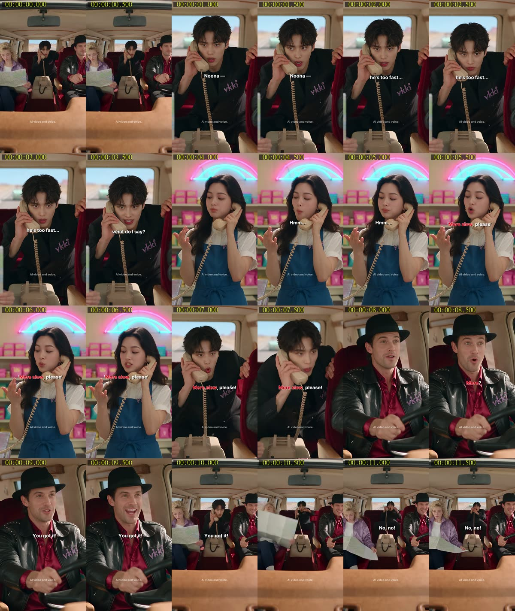
전체 흐름
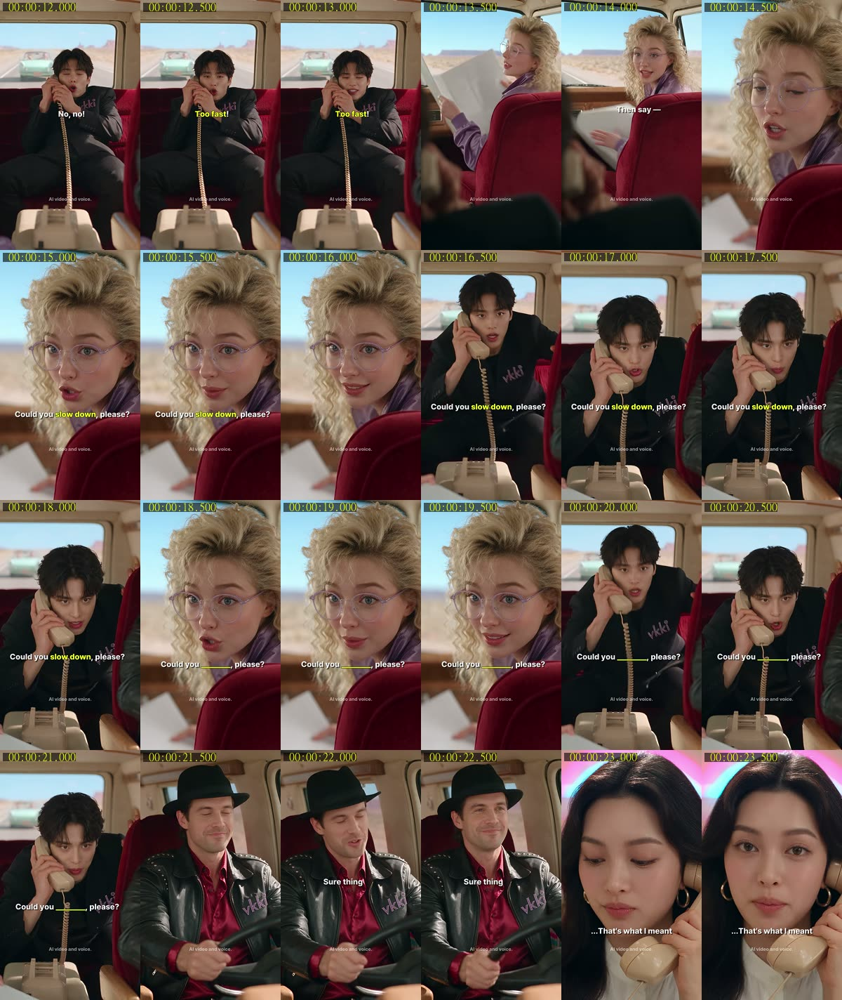
전체 흐름